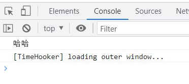

Safe: 02-安全入门
- TAGS: Safe
安全趋势概览
主要内容：
- 网络安全当前趋势、环境、法律法规
- 数据安全法、个人信息保护法的解读
- 网络安全就业环境，企业安全人员需求
- 安全职业发展前景
- 网络安全学习路径
网络安全当前趋势、环境、法律法规
网络安全法
概述
《网络安全法》是我国第一部网络安全领域的法律，是保障网络安全的基本法，与《国家安全法》、《反恐怖主义法》、
《刑法》、《保密法》、《治安管理处罚法》、《计算机 信息系统安全保护条例》等现行法律法规共同构成中国关 于网络安全管理的法律体系。
条文解读
第十二条 国家保护公民、法人和其他组织依法使用网络的权利
任何个人和组织使用网络应当遵守宪法法律，遵守公共秩序，尊重社会公德，不得危害网络安全，不得利用网络从事危害国家安全、荣誉和利益，煽动颠覆国家政权、推翻社会主义制度，煽动分裂国家、破坏国家统一，宣扬恐怖主义、极端主义，宣扬民族仇恨、民族歧视，传播暴力、淫秽色情信息，编造、传播虚假信息扰乱经济秩序和社会秩序，以及侵害他人名誉、隐私、知识产权和其他合法权益等活动。
解读：点明了哪些事情不可为。即时通讯、搜索、网络社区等存在较多言论行为的网络服务注意信息审计，净化网络环境。
第三十七条 运营中收集和产生的个人信息和重要数据应当在境内存储。因业务需要，确需向境外提供的，应当按照国家网信部门会同国务院有关部门制定的办法进行安全评估；法律、行政法规另有规定的，依照其规定。
解读：个人信息和重要信息需境内存储。外企和有海外业务的国内企业应重点 关注。
第三十八条 关键信息基础设施的运营者应当自行或者委托网络安全服务机构对其网络的安全性和可能存在的风险每年至少进行一次检测评估，并将检测评估情况和改进措施报送相关负责关键信息基础设施安全保护工作的部门。
解读：每年至少一次的网络安全检测和风险评估。
第四十条 网络运营者应当建立健全用户信息保护制度，对其收集的用户信息必须严格保密。
解读 : 进行用户信息保护。用户信息主要是指：用户使用产品或服务过程中收集的信息构成用户信息，包括IP地址、用户名和密码、上网时间、Cookie信息等。
第四十一条 网络运营者收集、使用个人信息，应当遵循合法、正当、必要的原则，公开收集、使用规则，明示收集、使用信息的目的、方式和范围，并经被收集者同意。网络运营者不得收集与其提供的服务无关的个人信息，不得违反法律、行政法规的规定和双方的约定收集、使用个人信息，并应当依照法律、行政法规的规定和与用户的约定，处理其保存的个人信息。
解读：进行个人信息保护。个人信息指：以电子或者其他方式记录的能够单独或者与其他信息结合识别自然人个人身份的各种信息，包括但不限于自然人的姓名、出生日期、身份证件号码、个人生物识别信息、住址、电话号码
总结
- 严处中介买卖交换个人信息，收集用户信息应取得同意
个人信息有了“保护伞”
网络运营者不得泄露其收集的个人信息；中介买卖交换个人信息也算侵权；提供个人信息违法所得5000元以上可入刑。
网络产品、服务具有收集用户信息功能的，其提供者应向用户明示并取得同意；网络运营者不得泄露、篡改、毁损其收集的个人信息，未经被收集者同意，不得向他人提供个人信息；任何个人和组织不得窃取或者以其他非法方式获取个人信息，不得非法出售或者非法向他人提供个人信息；任何个人和组织应当对其使用网络的行为负责，不得设立用于实施诈骗，传授犯罪方法等。
- 贩卖 50 条个人信息可入罪
对于刑法相关规定中“情节严重”的认定标准，司法解释明确规定了入罪 10 种情形，包括非法获取、出售或者提供行踪轨迹信息、通信内容、征信信息、财产信息 50条以上的 ；非法获取、出售或提供住宿信息、通信记录、健康生理信息、交易信息等其他可能影响人身、财产安全的公民个人信息 500条以上的 。
数据安全法
概述
2021年6月10日，《数据安全法》由中华人民共和国第十三届全国人民代表大会常务委员会第二十九次会议通过，自2021年9月1日起施行。
数据安全法是总体国家安全观框架下，国家安全法律体系的重要组成部分。该法律在网络安全法的基础上，进一步明解了数据安全相关者的保护义务与职责，并与国家互联网信息办公室发布的《数据安全管理办法（征求意见稿）》相互照应。《数据安全法》的诞生，标志着数据安全上升到国家安全层面，意义重大。
条文解读
第二条 在中华人民共和国境内开展数据处理活动及其安全监管，适用本法。
在中华人民共和国境外开展数据处理活动，损害中华人民共和国国家安全、公共利益或者公民、组织合法权益的，依法追究法律责任。
解读：数据安全问题不仅在国内受到监管，境外势力威胁我国数据安全的恶意活动也将受到追究与惩罚。
第三条 本法所称数据，是指任何以电子或者其他方式对信息的记录。数据处理，包括数据的收集、存储、使用、加工、传输、提供、公开等。数据安全，是指通过采取必要措施，确保数据处于有效保护和合法利用的状态，以及具备保障持续安全状态的能力。
解读：扩大了数据保护范围。
第六条 各地区、各部门对本地区、本部门工作中收集和产生的数据及数据安全负责。
工业、电信、交通、金融、自然资源、卫生健康、教育、科技等主管部门承担本行业、本领域数据安全监管职责。
公安机关、国家安全机关等依照本法和有关法律、行政法规的规定，在各自职责范围内承担数据安全监管职责。
国家网信部门依照本法和有关法律、行政法规的规定，负责统筹协调网络数据安全和相关监管工作。
解读：有监管才能有推进。
第十八 国家促进数据安全检测评估、认证等服务的发展，支持数据安全检测评估、认证等专业机构依法开展服务活动。
国家支持有关部门、行业组织、企业、教育和科研机构、有关专业机构等在数据安全风险评估、防范、处置等方面开展协作。
第三十条 重要的数据处理者就当按照规定对其数据处理活动定期开展风险评估，并向有关主管部门报送风险评估报告。
风险评估报告应当包括处理的重要数据的种类、数量，开展数据处理活动的情况，面临的数据安全风险及其应对措施等。
解读：网络安全行业的又一分支，热门发展方向。
第6 18 30 条放一起，6有上级监管，18有国家鼓励，30要求定期测评。代表着在未来几年内网络安全的一个热门方向数据安全。
第十九条 国家建立健全数据交易管理制度，规范数据交易行为，培育数据交易市场。
解读：明确数据是可交易的，但不能滥用。
第二十一条 国家建立数据分类分级保护制度，根据数据在经济社会发展中的重要程度，以及一旦遭到篡改、破坏、泄露或者非法获取、非法利用，对国家安全、公共利益或者个人、组织合法权益造成的危害程度，对数据实行分类分级保护。国家数据安全工作协调机制统筹协调有关部门制定重要数据目录，加强对重要数据的保护。
关系国家安全、国民经济命脉、重要民生、重大公共利益等数据属于国家 核心数据 ，实行更加严格的管理制度。
各地区、各部门应当按照数据分类分级保护制度，确定本地区、本部门以及相关行业、领域的 重要数据 具体目录，对列入目录的数据进行重点保护。
解读：数据安全的工作重点–分类分级。核心数据、重要数据、一般数据
第二十七条 开展数据处理活动应当依照法律、法规的规定，建立健全全流程数控安全管理制度，组织开展数据安全教育培训，采取相应的技术措施和其他必要措施，保障数据安全。利用互联网等信息网络开展数据处理活动，应当在网络安全等级保护制度的基础上，履行上述数据安全保护义务。
重要数据的处理者应当明解数据安全负责人和管理机构，落实数据安全保护责任。
解读：数据安全要在满足等保的基础上进行。
总结
- 建立数据安全管理制度，落实数据安全生命周期管控责任
- 通过数据分类分级，实现企业数据安全建设第一步
- 针对不同类别&级别的数据，实施具体保护措施
- 建立数据安全事件应急响应机制
- 组织开展数据安全培训教育
个人信息保护法
概述
数字时代的《个人信息保护法》，是保障个人信息权益乃至宪法性权利的基本法。
《个人信息保护法》第一条即开宗明义，为了保护个人信息权益，规范个人信息处理活动，促进个人信息合理利用，根据宪法，制定本法。其中在立法依据中"根据宪法" 这四个字表明：我国将个人信息受保护的权利提升至更高高度，其来源于《宪法》：国家尊重和保障个权，公民的人格尊严不受侵犯，公民的通信自由和通信秘密受法律保护。
《个人信息保护法》于2021年8月20日正式出台，同年11月1日起施行。 自此，我国终于形成了以《网络安全法》《数据安全法》《个人信息保护法》三法为核心的网络安全法律体系 ，为数字时代网络安全、数据安全、个人信息权益保护提供了基础制度保障。
条文解读
第四条 个人信息 是以电子或者其他方式记录的与已识别或者可识别的自然人有关的各种信息，不包括匿名化处理后的信息。
个人信息的处理包括个人信息的收集、存储、使用、加工、传输、提供、公开、删除等。
第二十八条 敏感个人信息 是一旦泄露或者非法使用，容易导致自然人的人格尊严受到侵害或者人身、财产安全受到危害的个人信息，包括生物识别、宗教信仰、特定身份、医疗健康、金融账户、行踪轨迹等信息， 以及不满十四周岁未成年人的个人信息 。
只有在具有特定的目的和充分的必要性，并采取严格措施的情况下，个人信息处理者方可处理敏感个人信息。
解读：对个人信息和敏感个人信息进行了明确界定。
第十四条 基于个人同意处理个人信息的，该同意应当由个人在充分知情的前提下自愿、明解作出。法律、行政法规规定处理个人信息应当取得个人单独同意或者书面同意的，从其规定。个人信息的处理目的、处理方式和处理的个人信息种类发生变更的，应当重新取得个人同意。
第十五条 基于个人同意处理个人信息的，个人有权撤回同意。个人信息处理者应当提供便捷的撤回同意的方式。
个人撤回同意，不影响撤回前基于个人同意已进行的个人信息处理活动的效力。
第十六条 个人信息处理者不得以个人不同意处理其个人信息或者撤回同意为由，拒绝提供产品或者服务；处理个人信息属于提供产品或者服务所必需的除外。
解读：处理个人信息的核心原则是告知和同意。
第三十一条 个人信息处理者处理不满十四周岁未成年人个人信息的，应当取得未成年人的父母或者其他监护人的同意。
个人信息处理者处理不满十四周岁未成年人个人信息的，应当制定专门的个人信息处理规则。
解读：重点保护未成年人信息。
条文解读–个人在个人信息处理活动中的权利：
第四十四条 个人对其个人信息的处理享有知情权、决定权，有权限制或者拒绝他人对其个人信息进行处理；法律、行政法规另有规定的除外。
第四十五条 个人有权向个人信息处理者查阅、复制其个人信息；有本法第十八条第一款、第三十五条规定情形的除外 。
第四十六条 个人发现其个人信息不准确或者不完整的，有权请求个人信息处理者更正、补充。
第四十七条 有下列情形之一的，个人信息处理者应当主动删除个人信息；个人信息处理者未删除的，个人有权请求删除：
…
第四十八条 个人有权要求个人信息处理者对其个人信息处理规则进行解释说明。
第四十九条 自然人死亡的，其近亲属为了自身的合法、正当利益，可以对死者的相关个人信息行使本章规定的查阅、复制、更正、删除等权利；死者生前另有安排的除外。
第五十条 个人信息处理者应当建立便捷的个人行使权利的申请受理和处理机制。拒绝个人行使权利的请求的，应当说明理由。
个人信息处理者拒绝个人行使权利的请求的，个人可以依法向人民法院提起诉讼。
总结
《个人信息保护法》正式实施，强化了对公民个人信息的系统保护。
之前，对于公民个人信息的保护虽然也写入了立法，但主要散落于《民法典》《刑法》《网络安全法》《消费者权益保护法》《电子商务法》《数据安全法》等法律中，且缺乏保护的基本原则。经由一部专门的法律"提纲挈领"，不仅集个人信息的法律保护之大成，便于公民个人"按图干索骥"，保护合法权益，更凸显了立法对个人信息保护的重视程度，释放出依法维护个人信息安全的强烈讯号。尤其重要的是，《个人信息保护法》明确将"告知–同意"原则作为个人信息保护的基本规则，作为个人信息处理者处理用户信息的规范前提，赋予了公民对个人信息处理的知情权、决定权，也为界定"合法"与"违法"划出了分水岭。
刑法
刑法第二百八十六条
第一种类型是，违反国家规定，对计算机信息系统功能进行删除、修改、增加、干扰，造成计算机信息系统不能正常运行，后果严重；
第二种类型是，违反国家规定，对计算机信息系统中存储、处理或者传输的数据和应用程序进行删除、修改、增加的操作，后果严重的；
第三种类型是，故意制作、传播计算机病毒等破坏性程序，影响计算机系统正常运行，后果严重
网络安全趋势
网络安全趋势
2014年，我国成立了中央网络安全和信息化领导小组，统筹协调涉及各个领域的网络安全和信息化重大问题。国务院重组了国家互联网信息办公室，授权其负责全国互联网信息内容管理工作，并负责监督管理执法。
工信部发布了《关于加强电信和互联网行业网络安全工作的指导意见》，明确了提升基础设施防护、加强数据保护等八项重点工作，着力完善网络安全保障体系。我国国家网络与信息安全顶层领导力量明显加强，管理体制日趋完善，机构运行日渐高效，工作目标更加细化。
近年来，我国互联网蓬勃发展，网络规模不断扩大，网络应用水平不断提高，成为推动经济发展和社会进步的巨大力量。与此同时，网络和业务发展过程中也出现了许多新情况、新问题、新挑战，尤其是当前网络立法系统性不强、及时性不够和立法规格不高，物联网、云计算、大数据等新技术新应用、数据和用户信息泄露等的网络安全问题日益突出。
未来，我国将不断加强网络安全依法管理、科学管理，更加重视新技术新应用安全问题，促进移动互联网应用生态环境优化，加速构建网络安全保障体系，推动网络安全相关技术和产业快速发展。一是国无法不立，网无法不兴，依法治网将成为新常态。
专业竞争力排名
| 排名 | 专业名称 | 竞争力指数 |
| 1 | 软件安全 | 134.8 |
| 2 | 信息安全 | 132.8 |
| 3 | 计算机科学与技术 | 129.8 |
| 4 | 信息与计算科学 | 127.8 |
| 5 | 电子科学与技术 | 127.8 |
| 6 | 数学与应用数学 | 127.6 |
| 7 | 计算机应用技术 | 127.5 |
| 8 | 应用物理学 | 126.7 |
| 9 | 网络工程 | 126.6 |
| 10 | 电子与通信工程 | 126.2 |
工作五年后薪酬最高的十五个行业
| 软件工程 | 14.6 |
| 信息安全 | 14.4 |
| 计算机科学与技术 | 13.9 |
| 数学与应用数学 | 13.5 |
| 项目管理 | 12.9 |
| 信息与计算机 | 12.9 |
| 网络工程 | 12.5 |
| 计算机应用 | 12.1 |
| 统计学 | 11.9 |
| 电子信息科学与技术 | 11.2 |
| 金融学 | 11.2 |
| 通信工程 | 10.9 |
| 材料科学与管理 | 10.9 |
| 应用物理学 | 10.3 |
| 数字媒体技术 | 10.1 |
国家有哪些关键信息技术行业
通信行业
中国移动、联通、电信、铁通等
铁路航空行业
中国航空、高铁、铁路部门等
金融行业
上海银监局，东亚银行，宁波银行，兰州银行，法国兴业银行，中国工商银行数据中心，澳新银行（中国）北京分行，成都银行，广西北部湾银行，申银万国证券，光大证券;
电力行业
国网电力科学研究院，浙江省电力，上海电气，安徽电力，云南云电同方科技有限公司，上海电力科学研究院等
互联网
英特尔公司Intel（供应商），思科中国 Cisco，联想集团，百度在线网络技术（北京）有限公司，支付宝（中国）网络技术有限公司，杭州华三通信技术有限公司，网神信息技术（北京）股份有限公司，上海启明软件股份有限公司，北京江南博仁科技有限公司等;
其他行业
创维得志控股有限公司，天建天土力集团有限公司，安利（中国）日用品有限公司。家得宝 （天洼）商业有限公司，快乐购物股份有限公司，CHIC，TCL集团，群邑媒介集团，宝钢集团有限公司，上海江森自控有限公司，上海汽车集团股份有限公司，上海大众汽车有限公司。丰田汽车金融（中国）有限公司等;
除上面之外，还有腾讯、网易、百度、阿里、淘宝 、美团、抖音、拼多多、新浪等公司都需要网络安全人才来支撑关键业务安全稳定运行。
网络安全就业情况分析
安全工程师的副业-SRC(安全响应中心)
安全应急响应中心（SRC, Security Response Center），是企业用于对外接收来自用户发现并报告的产品缺陷的站点。一般用来对外发布企业突发安全事件处理动态，作为企业与热心用户以及安全研究人员沟通反馈的平台以及对外发布企业信息安全团队研究成果的重要作用。
习近平强调，没有网络安全就没有国家安全，就没有经济社会稳定运行，广大人民群众利益也难以得到保障。要树立正确的网络安全观，加强信息基础设施网络安全防护，加强网络安全信息统筹机制、手段、平台建设，加强网络安全事件应急指挥能力建设，积极发展网络安全产业，做到关口前移，防患于未然。
习近平强调，推进全球互联网治理体系变革是大势所趋、人心所向。国际网络空间治理应该坚持多边参与、多方参与， 发挥政府、国际组织、互联网企业、技术社群、民间机构、公民个人等各种主体作用。
ASRC(阿里 SRC)： https://security.alibaba.com/
TSRC(腾讯 SRC) 漏洞处理和评分标准 : https://security.tencent.com/uploadimg_dir/other/TSRC.pdf
推荐从一些的小的 SRC 上挖起。
安全工程师的副业-护网
- HW是什么
“护网行动”是由 GA 国公安部统一组织的，以国家组织关键信息基础设施单位和大型企业等作为目标，开展攻防对抗的网络安全实战演习活动。
每支队伍 3-5 人组成，明确目标系统，不限攻击路径， 获取到目标系统的权限、数据即可得分，禁止对目标实施破坏性操作，对目标系统关键区域操作必须得到指挥部批准。
不限制攻击路径和手段 ，以获取权限和数据为目标来开展，高度模拟真实对抗场景，更加考验防守的全面性。
护网的根本目的 ，就是面对当代风云突变的国际形势，国家关键信息基础设施单位（CII）如何在保证关乎国计民生业务稳定运行的情况下，不被黑客病毒等恶意攻击。
护网一般按照行政级别分为国家级护网、省级护网、市级护网等，根据级别的不同，时间长度也不一致。国家级护网，一般来说是每年的中旬左右开始，持续时间是2~3周。护网一般分为攻守双方进行红蓝对抗，红队为攻击队，蓝队为防守队，此外，还有一个“紫队”的概念。
HW–大型攻防演练
目的：提供国家关键信息基础设施行业的整体安全防护能力和水平
- HW发展历史
- 2016 年：内测，少部分行业参与
- 2017-2018：初始阶段，攻击队比较容易得手，防守工作比较混乱，被动挨打。
- 2019：出现了流量监控设备，给防守方的工作提供了抓手，防守方不再被动挨打，可以撰写防守报告，大量。
- 2020：精准监控、应急处置，对防守报告的要求增加
- 2021&2022：溯源反制，大量0day 漏洞登场。0day 漏洞即没被公布出来的漏洞。
- 未来：攻防常态化
攻击难度增加，攻击队压力越来越大，攻击人员的要求越来越高。
- 2016 年：内测，少部分行业参与
- 不同行政级别的HW
- 国家级: 通常是国家
- 省级：
- 市级：
- 行业&单位内部：各行各业都可以参与
- 国家级: 通常是国家
- HW规则解读
每支攻击队伍由3~5人组成，赛前会明确目标系统， 不限攻击路径
- 禁用DDOS
- 不能使用破坏性的物理入侵。即可以物理入侵但不能破坏
- 不能使用传播性的木马病毒
- 对目标系统关键区域操作必须得到指挥部批准。
提交漏洞并不能得分，获取目标系统的权限or数据才能得分。
对照上述攻击方的得分规则，防守方的失分规则也是同理。
护网的根本目的，就是面对当代风云突变的国际形势，国家关键信息基础设施单位（CII）如何在保证关乎国计民生业务稳定运行的情况下，不被黑客病毒等恶意攻击。
- 禁用DDOS
- HW要求解读
HW级别 攻击方 防守方 国家级 提交漏洞不得分。拿下系统权限或者数据才得分 有防守需求和分值。需要防守人员24h值守 省级 提交漏洞不得分。拿下系统权限或者数据才得分 可能有防守需求和分值。需要防守人员工作时间值守 市级 提交漏洞可能会得分。拿下系统权限或者数据会得分 通常没有防守需求 行业&单位内部 不同的行业或者单位，其网络安全水平不同，不好进行评价 - 岗位分组参考
- 国家级
岗位级别低
攻击方
几乎没有此类需求
防守方
具备计算机网络、操作系统、中间件、网络安全基础知识，熟练使用常见的渗透测试工具，具备漏洞挖掘能力（如OWASP TOP10、常见的框架漏洞），熟悉常见的渗透攻击手段和安全防护设备，能够进行日志分析。
岗位级别中
攻击方
- 掌握各种主流系统、 Web安全漏洞的利用及原理，能够独立挖掘各类高危漏洞，具备内网渗透、域渗透、防护产品绕过等手法以及脚本编写能力。
防守方
- 独立分析告警内容，判断攻击路径，完成攻击面全局分析、溯源，提出有效解决方案；熟练掌握攻击能力，可第一时间基于突发漏洞形成应急响应；具备安全设备基础知识，了解防火墙、 IDS、安全管理平台、蜜罐、威胁分析平台等。
岗位级别:高
攻击方
- 情报整合、边界打点、权限维持、建立隧道、内网移动；丰富的大型环境渗透经验、赛事实战经验，掌握各种技战法。
防守方
- 技术：溯源反制能力、应急响应专家；
- 管理：把控护网行动的整体流程，制定防守方案，推动护网工作进度。
- 掌握各种主流系统、 Web安全漏洞的利用及原理，能够独立挖掘各类高危漏洞，具备内网渗透、域渗透、防护产品绕过等手法以及脚本编写能力。
- 国家级
网络安全发展前景
根据不同的安全规范、应用场景、技术实现等，安全可以有很多分类方法，在这里我们简单分为网络安全、Web安全、云安全、移动安全（手机）、桌面安全（电脑）、主机安全（服务器）、工控安全、无线安全、数据安全 等不同领域。
web 安全发展前景以及发展面更加宽广，建议以 web 安全工程师为切入点进入安全行业，再结合自身的优势确认未来的发展方向。
网络安全
[网络安全] 是安全行业最经典最基本的领域，也是目前国内安全公司发家致富的领域，例如启明星辰、绿盟科技、天融信这几个企业。
这个领域研究的技术范畴主要围绕防火墙/NGFW/UTM、网闸、入侵检测/防御、VPN网关（IPsec/SSL）、抗DDOS、上网行为管理、负载均衡/应用交付、流量分析、漏洞扫描等。
通过以上网络安全产品和技术，我们可以设计并提供一个安全可靠的网络架构，为政府/国企、互联网、银行、医院、学校等各行各行的网络基础设施保驾护航。
Web安全
Web安全领域从狭义的角度来看，就是一门研究[网站安全]的技术，相比[网络安全]领域，普通用户能够更加直观感知。
例如，网站不能访问了、网站页面被恶意篡改了、网站被黑客入侵并泄露核心数据（例如新浪微博或淘宝网用户账号泄露，这个时候就会引发恐慌且相继修改密码等）。
当然，大的安全项目里面，Web安全仅仅是一个分支，是需要跟[网络安全]是相辅相成的，只不过Web安全关注上层应用和数据，网络安全关注底层网络安全。
如今，社交、电商、游戏、网银、邮箱、OA…..等几乎所有能联网的应用，都可以直接基于Web技术来提供。
由于Web所承载的意义越来越大，围绕Web安全对应的攻击方法与防御技术也层出不穷，例如WAF（网页防火墙）、Web漏洞扫描、网页防篡改、网站入侵防护等更加细分垂直的Web安全产品也出现了。
适合我们的岗位有哪些？
安全目前主要应聘的岗位是：安全工程师、安全运维、安全服务工程师、Web渗透测试、Web安全工程师，当然，也有安全研发和安全售前岗位。
例如在安全公司如绿盟科技、深信服、360、天融信等做安全工程师、安全服务、渗透测试等岗位，在甲方单位例如运营商（中国移动、中国电信）、金融类公司（平安科技、招商银行）等更多做安全运维、Web应用审计、Web渗透测试等岗位
网络安全学习路径
html 入门
VSCode 安装 Live Server 插件。在本地启动一个服务器，代码写完后可以实现「热更新」，实时地在网页中看到运行效果。就不需要每次都得手动刷新页面了。
Web、网页、浏览器
- Web
Web（World Wide Web）即全球广域网，也称为万维网。
我们常说的 Web端 就是网页端。
- 网页
网页是构成网站的基本元素 。网页主要由文字、图像和超链接等元素构成。当然，除了这些元素，网页中还可以包含音频、视频以及Flash等。
我们在浏览器上输入网址后，打开的任何一个页面，都是属于网页。
- 浏览器
- 浏览器是网页运行的平台，常见的浏览器有谷歌（Chrome）、Safari、火狐（Firefox）、IE、Edge、Opera等。
Web 标准
W3C 组织
W3C：World Wide Web Consortium，万维网联盟组织，用来制定web标准的机构（组织）。
W3C 万维网联盟是国际最著名的标准化组织。1994年成立后，至今已发布近百项相关万维网的标准，对万维网发展做出了杰出的贡献。
W3C 组织就类似于现实世界中的联合国。
为什么要遵循WEB标准呢？因为很多浏览器的浏览器内核不同，导致页面解析出来的效果可能会有差异，给开发者增加无谓的工作量。因此需要指定统一的标准。
Web 标准
Web 标准：制作网页要遵循的规范。
Web 标准不是某一个标准，而是由W3C组织和其他标准化组织制定的一系列标准的集合。
1、Web标准包括三个方面：
- 结构标准（HTML）：用于对网页元素进行整理和分类。
- 表现标准（CSS）：用于设置网页元素的版式、颜色、大小等外观样式。
- 行为标准（JS）：用于定义网页的交互和行为。
根据上面的Web标准，可以将 Web前端分为三层，如下。
2、Web前端分三层：
- HTML（HyperText Markup Language）：超文本标记语言。从 语义 的角度描述页面的结构。相当于人的身体组织结构。
- CSS（Cascading Style Sheets）：层叠样式表。从 审美 的角度美化页面的 样式 。相当于人的衣服和打扮。
- JS：JavaScript。从 交互 的角度描述页面的 行为 。相当于人的动作，让人有生命力。
浏览器的组成
浏览器分成两部分：
- 1、渲染引擎（即：浏览器内核）
- 2、JS 引擎
1、渲染引擎（浏览器内核）
浏览器所采用的「渲染引擎」也称之为「浏览器内核」， 用来解析 HTML 与 CSS 。渲染引擎决定了浏览器如何显示网页的内容以及页面的格式信息。
渲染引擎是浏览器兼容性问题出现的根本原因。
渲染引擎的英文叫做 Rendering Engine。通俗来说，它的作用就是：读取网页内容，计算网页的显示方式并显示在页面上。
常见浏览器的内核如下：
| 浏览器 | 内核 |
| chrome | Blink |
| 欧鹏 | Blink |
| 360安全浏览器 | Blink |
| 360极速浏览器 | Blink |
| Safari | Webkit |
| Firefox 火狐 | Gecko |
| IE | Trident |
备注：360 的浏览器，以前使用的 IE 浏览器的 Trident 内核，但是现在已经改为使用 chrome 浏览器的 Blink 内核。
另外，移动端的浏览器内核是什么？大家可以自行查阅资料。
2、JS 引擎（JS解释器）
也称为 JS 解释器。 用来解析网页中的 JavaScript 代码 ，对其处理后再运行。
浏览器本身并不会执行JS代码，而是通过内置 JavaScript 引擎(解释器) 来执行 JS 代码 。JS 引擎执行代码时会逐行解释每一句源码（转换为机器语言），然后由计算机去执行。所以 JavaScript 语言归为脚本语言，会逐行解释执行。
常见浏览器的 JS 引擎如下：
| 浏览器 | JS 引擎 |
| chrome / 欧鹏 | V8 |
| Safari | Nitro |
| Firefox 火狐 | SpiderMonkey（1.0-3.0）/ TraceMonkey（3.5-3.6）/ JaegerMonkey（4.0-） |
| Opera | Linear A（4.0-6.1）/ Linear B（7.0-9.2）/ Futhark（9.5-10.2）/Carakan（10.5-） |
| IE | Trident |
如
- 网站阻止复制粘贴
- 识别哪种操作系统，利用 js 的 ajax 技术实现。
HTML的概述
HTML的概念
HTML 全称为 HyperText Markup Language，译为超文本标记语言。
HTML 不是一种编程语言，是一种描述性的标记语言。
作用：HTML 是负责描述文档 语义 的语言。
概念：超文本
所谓的超文本，有两层含义：
（1）图片、音频、视频、动画、多媒体等内容，成为超文本，因为它们超出了文本的限制。
（2）不仅如此，它还可以从一个文件跳转到另一个文件，与世界各地主机的文件进行连接。即：超级链接文本。
概念：标记语言
HTML 不是一种编程语言，是一种描述性的标记语言。这主要有两层含义：
（1）标记语言是一套标记标签。比如：标签 <a> 表示超链接、标签 <img> 表示图片、标签 <h1> 表示一级标题等等，它们都是属于 HTML 标签。
说的通俗一点就是：网页是由网页元素组成的，这些元素是由 HTML 标签描述出来，然后通过浏览器解析，就可以显示给用户看了。
（2）编程语言是有编译过程的，而标记语言没有编译过程，HTML标签是直接由浏览器解析执行。
HTML是负责描述文档语义的语言
HTML 格式的文件是一个纯本文文件（就是用txt文件改名而成），用一些标签来描述语义，这些标签在浏览器页面上是无法直观看到的，所以称之为“超文本标记语言”。
接下来，我们需要学习 HTML 中的很多“标签对儿”，这些“标签对儿”能够给文本不同的语义。
比如，<h1> 标签有什么作用？
- 正确答案：给文本增加主标题的语义。
- 错误答案：给文字加粗、加黑、变大。
关乎“语义”的更深刻理解，等接下来我们学习了各种标签，就明白了。
HTML的专有名词
- 网页 ：由各种标记组成的一个页面就叫网页。
- 主页(首页) : 一个网站的起始页面或者导航页面。 index
- 标记： 比如
<p>称为开始标记 ，</p>称为结束标记，也叫标签。每个标签都规定好了特殊的含义。 - 元素：比如
<p>内容</p>称为元素. 属性：给每一个标签所做的辅助信息。如
<meta http-equiv="Content-Type" content="text/html;charset=utf-8"> meta: 定义关于 HTML 文档的元数据。位于 head 标签内。通常用于指定字符集、页面描述、关键词、文档作者和视口设置 meta 标签中的属性： - http-equiv 为 content 属性的信息/值提供 HTTP 标头。 - content 规定与 http-equiv 或 name 属性关联的值。
- XHTML：符合 XML 语法标准的 HTML。
- DHTML：dynamic，动态的。 javascript + css + html 合起来的页面就是一个 DHTML。
- HTTP：超文本传输协议。用来规定客户端浏览器和服务端交互时数据的一个格式。
- SMTP：邮件传输协议。
- FTP：文件传输协议。
书写第一个 HTML 页面
VS Code 执行代码需要代码在一个文件夹中。
我们打开 VS Code 软件，新建一个文件，名叫 test.html （注意，文件名是 test ，后缀名是html ），保存到本地。
紧接着，在文件里，输入 html:5 ，然后按一下键盘上的 Tab 键，就可以自动生成如下内容：
<!DOCTYPE html> <html lang="en"> <head> <meta charset="UTF-8"> <meta name="viewport" content="width=device-width, initial-scale=1.0"> <title>Document</title> </head> <body> </body> </html>
上面的内容，就是 html 页面的骨架。我们在此基础之上，新增几个标签，完整代码如下：
<!DOCTYPE html> <html lang="en"> <head> <meta charset="UTF-8"> <meta name="viewport" content="width=device-width, initial-scale=1.0"> <title>Document</title> </head> <body> <h3>我是三级标题</h3> <img src="" alt=""> <a href="https://www.jd.com">我是超链接，可以点击一下</a> </body> </html>
标签写完之后，我们用 chrome 浏览器打开上面这个 test.html 文件，看看页面效果：
到此，第一个简单的 HTML 页面就写完了。是不是很有成就感？
黑帽 SEO : 非法地利用搜索引擎规则提高自然排名的方式(暗链)，如下超链接隐藏在网页中：
<!DOCTYPE html> <html lang="en"> <head> <meta charset="UTF-8"> <meta name="viewport" content="width=device-width, initial-scale=1.0"> <title>Document</title> </head> <body> <a href="https://xxx.com"></a> </body> </html>
暗链
- 危害： 网信办要求停顿整改
- 修复： 删除
- 防护： 网页目录监控；漏洞扫描；企业蓝军，模拟黑客攻击；外围防护，如网页防篡改产品。
HTML结构详解
HTML标签通常是成对出现的（双边标记），比如 <div> 和 </div> ；也有少部分单标签（单边标记），如： <br /> 、 <hr /> 和 <img src="images/1.jpg" /> 等。
属性与标记之间、各属性之间需要以空格隔开。属性值以双引号括起来。
html骨架标签分类
| 标签名 | 定义 | 说明 |
| <html></html> | HTML标签 | 页面中最大的标签 我们成为根标签 |
| <head></head> | 文档的头部 | 注意在head标签中我们必须要设置的标签是title |
| <titile></title> | 文档的标题 | 让页面拥有一个属于自己的网页标题 |
| <body></body> | 文档的主体 | 元素包含文档的所有内容，页面内容 基本都是放到body里面的 |
1、文档声明头
任何一个标准的HTML页面，第一行一定是一个以 <!DOCTYPE ……> 开头的语句。这一行，就是文档声明头，即 DocType Declaration，简称DTD。
DTD可告知浏览器文档使用哪种 HTML 或 XHTML 规范。
在HTML5中极大的简化了DTD，也就是说HTML5中就没有XHTML了。
HTML5的DTD（文档声明头）如下：
<!DOCTYPE html>
2、页面语言 lang
下面这行标签，用于指定页面的语言类型：
<html lang="en">
最常见的语言类型有两种：
- en：定义页面语言为英语。
- zh-CN：定义页面语言为中文。
3、头标签 head
html5 的比较完整的骨架：
<!DOCTYPE html> <html lang="en"> <head> <meta charset="UTF-8"> <meta name="viewport" content="width=device-width, initial-scale=1.0"> <meta http-equiv="Content-Type" content="text/html;charset=UTF-8"> <meta name="Keywords" content="厉害很厉害" /> <meta name="Description" content="xxxx" /> <title>Document</title> </head> <body> </body> </html>
面试题：
- 问：网页的head标签里面，表示的是页面的配置，有什么配置？
- 答：字符集、关键词、页面描述、页面标题、IE适配、视口、iPhone小图标等等。
头标签内部的常见标签如下：
- <title> ：指定整个网页的标题，在浏览器最上方显示。
- <base> ：为页面上的所有链接规定默认地址或默认目标。
- <meta> ：提供有关页面的基本信息
- <body> ：用于定义HTML文档所要显示的内容，也称为主体标签。我们所写的代码必须放在此标签內。
- <link> ：定义文档与外部资源的关系。
meta 标签：
meta表示“元”。“元”配置，就是表示基本的配置项目。
常见的几种 meta 标签如下：
（1）字符集 charset：
<meta http-equiv="Content-Type" content="text/html;charset=UTF-8">
字符集用meta标签中的 charset 定义，charset就是character set（即“字符集”），即 网页的编码方式 。
字符集(Character set)是多个字符的集合。计算机要准确的处理各种字符集文字，需要进行字符编码，以便计算机能够识别和存储各种文字。
上面这行代码非常关键， 是必须要写的代码，否则可能导致乱码。比如你保存的时候，meta写的和声明的不匹配，那么浏览器就是乱码。
utf-8是目前最常用的字符集编码方式，常用的字符集编码方式还有gbk和gb2312等。关于“编码方式”，
我们在下一段会详细介绍。
（2）视口 viewport：
<meta name="viewport" content="width=device-width, initial-scale=1.0">
width=device-width ：表示视口宽度等于屏幕宽度。
viewport 这个知识点，初学者还比较难理解，以后学 Web 移动端的时候会用到。
（3）定义“关键词”：
举例如下：
<meta name="Keywords" content="网易,邮箱,游戏,新闻,体育,娱乐,女性,亚运,论坛,短信" />
这些关键词，就是告诉搜索引擎，这个网页是干嘛的，能够提高搜索命中率。让别人能够找到你，搜索到你。
（4）定义“页面描述”：
meta除了可以设置字符集，还可以设置关键字和页面描述。
只要设置Description页面描述，那么百度搜索结果，就能够显示这些语句，这个技术叫做 SEO（search engine optimization，搜索引擎优化）。
设置页面描述的举例：
<meta name="Description" content="xxx。" />
上面的几种 <meta> 标签都不用记，但是另外还有一个 <meta> 标签是需要记住的：
<meta http-equiv="refresh" content="3;http://www.xxx.com">
上面这个标签的意思是说，3秒之后，自动跳转到 XXX 页面。
title 标签:
用于设置网页标题：
<title>网页的标题</title>
title标签也是有助于SEO搜索引擎优化的。
base标签：
<base href="/">
base 标签用于指定基础的路径。指定之后，所有的 a 链接都是以这个路径为基准。
4、<body> 标签
<body> 标签的属性有：
- bgcolor ：设置整个网页的背景颜色。
- background ：设置整个网页的背景图片。
- text ：设置网页中的文本颜色。
- leftmargin ：网页的左边距。IE浏览器默认是8个像素。
- topmargin ：网页的上边距。
- rightmargin ：网页的右边距。
- bottommargin ：网页的下边距。
计算机编码介绍
计算机，不能直接存储文字，存储的是编码。
计算机只能处理二进制的数据，其它数据，比如：0-9、a-z、A-Z，这些字符，我们可以定义一套规则来表示。假如：A用110表示，B用111表示等。
ASCII码 ： 美国发布的，用1个字节(8位二进制)来表示一个字符，共可以表示2^8=256个字符。 美国的国家语言是英语，只要能表示0-9、a-z、A-Z、特殊符号。
ANSI编码： 每个国家为了显示本国的语言，都对ASCII码进行了扩展 。用2个字节(16位二进制)来表示一个汉字，共可以表示2^16＝65536个汉字。例如：
中国的ANSI编码是GB2312编码(简体)，对6763汉字进行编码，含600多特殊字符。另外还有GBK(简体)。
日本的ANSI编码是JIS编码。
台湾的ANSI编码是BIG5编码（繁体）。
GBK ： 对GB2312进行了扩展，用来显示罕见的、古汉语的汉字。现在已经收录了2.1万左右。并提供了1890个汉字码位。K的含义就是“扩展”。
Unicode编码(统一编码) ： 用4个字节(32位二进制)来表示一个字符，想法不错，但效率太低。例如，字母A用ASCII表示的话一个字节就够，可用Unicode编码的话，得用4个字节表示，造成了空间的极大浪费。A的Unicode编码是0000 0000 0000 0000 0000 0000 0100 0000
UTF-8(Unicode Transform Format)编码 ： 根据字符的不同，选择其编码的长度。比如：一个字符A用1个字节表示，一个汉字用3-4个字节表示。毫无疑问，开发中，都用UTF-8编码吧，准没错。
中文能够使用的字符集两种：
- 第一种：UTF-8。UTF-8是国际通用字库，里面涵盖了所有地球上所有人类的语言文字，比如阿拉伯文、汉语、鸟语……
- 第二种：GBK（对GB2312进行了扩展）。gb2312 是国标，是中国的字库，里面仅涵盖了汉字和一些常用外文，比如日文片假名，和常见的符号。
字库规模： UTF-8（字很全） > gb2312（只有汉字）
重点1：避免乱码
我们用meta标签声明的当前这个html文档的字库，一定要和保存的文件编码类型一样，否则乱码（重点）。
拿 sublime编辑器举例，当我们不设置的时候，sublime默认类型就是UTF-8。而一旦更改为gb2312的时候，就一定要记得设置一下sublime的保存类型： 文件→ set File Encoding to → Chinese Simplified(GBK) 。VS Code 的道理一样。
重点2：UTF-8和gb2312的比较
保存大小：UTF-8（更臃肿、加载更慢） > gb2312 （更小巧，加载更快）
总结：
- UTF-8：字多，有各种国家的语言，但是保存尺寸大，文件臃肿；
- gb2312：字少，只用中文和少数外语和符号，但是尺寸小，文件小巧。
列出2个使用情形：
1）某公司是做日本动漫的，经常出现一些日语动漫的名字，网页要使用UTF-8。如果用gb2312将无法显示日语。
2）某公司就是中文网页，极度的追求网页的显示速度，要使用gb2312。如果使用UTF-8将每个汉字多一个byte，所以5000个汉字，多5kb。我们是怎么查看网页的编码方式的呢？在浏览器中打开网页，右键，选择“查看网页源代码”，找到meta标签中的charset属性即可。
HTML标签：排版标签
排版标签：
<h1> <p> <hr /> <br /> <div> <span> <center> <pre>
下面来详细介绍一下排版标签。
标题标签
https://www.w3school.com.cn/tags/tag_hn.asp
标题使用 <h1> 至 <h6> 标签进行定义。 <h1> 定义最大的标题， <h6> 定义最小的标题。定义对齐方式，CSS语法： <h1 style="text-align:right"> text-align 的值 left、center、right、justify。
代码举例：
<!DOCTYPE html> <html lang="en"> <head> <meta charset="UTF-8"> <meta http-equiv="X-UA-Compatible" content="IE=edge"> <meta name="viewport" content="width=device-width, initial-scale=1.0"> <title>Document</title> </head> <body> <h1>H1</h1> <h2>H2</h2> <h3>H3</h3> <h4>H4</h4> <h5>H5</h5> <h6 style="text-align:right">H6</h6> </body> </html>
HTML 注释
HTML 注释的格式如下：
<!-- 我是 html 注释 -->
段落标签<p>
段落，是英语“paragraph“缩写。（段落）
作用：可以把 HTML 文档分割为若干段落。在网页中如果要把文字有条理地显示出来，离不开段落标签。就如同我们平常写文章一样，整个网页也可以分为若干个段落。
代码举例：
<p>This is a paragraph</p> <p>This is another paragraph</p>
属性：
- align="属性值" ：对齐方式。属性值包括left center right。
HTML标签是分等级的，HTML将所有的标签分为两种：
- 文本级标签：p、span、a、b、i、u、em。文本级标签里只能放文字、图片、表单元素。（a标签里不能放a和input）
- 容器级标签：div、h系列、li、dt、dd。容器级标签里可以放置任何东西。
从学习p的第一天开始，就要牢牢记住：p标签是一个文本级标签，p里面只能放文字、图片、表单元素。其他的一律不能放。
错误写法：（尝试把 h 放到 p 里）
<p> 我是一个小段落 <h1>我是一级标题</h1> </p>
网页效果如下：
浏览器不允许你这么做，我们使用Chrome的F12审查元素发现，浏览器自己把p封闭掉了，不让你去包裹h1。
PS：Chrome浏览器是HTML5支持度最好的浏览器。提供了非常好的开发工具，非常适合我们开发人员使用。审查元素功能的快捷键是F12。
水平线标签<hr />
horizontal 单词的发音：[ˌhɒrɪˈzɒntl]。
水平分隔线（horizontal rule）可以在视觉上将文档分隔成各个部分。在网页中常常看到一些水平线将段落与段落之间隔开，使得文档结构清晰，层次分明。
代码举例：
<!DOCTYPE html> <html lang="en"> <head> <meta charset="UTF-8"> <meta http-equiv="X-UA-Compatible" content="IE=edge"> <meta name="viewport" content="width=device-width, initial-scale=1.0"> <title>Document</title> </head> <body> <p>H1</p> <hr /> <p>H2</p> </body> </html>
运行一下看看效果吧。
换行标签<br />
如果希望某段文本强制换行显示，就需要使用换行标签。
This <br/> is a para<br/>graph with line breaks
<div>和<span>标签
div和span是非常重要的标签，div的语义是division“分割”； span的语义就是span“范围、跨度”。
div和span的介绍
- div标签：可以把标签中的内容分割为独立的区块。必须单独占据一行。
- span标签：和div的作用一致，但不换行。
代码举例：
<div>
div_1
</div>
<div>
div_2
</div>
<span>
span_1
</span>
<span>
span_2
</span>
# 页面显示
div_1
div_2
span_1 span_2
可以看到2个span标签同时使用，并没有换行。
div标签的属性：
- align="属性值" ：设置块儿的位置。属性值可选择：left、right、 center。
div和span的区别
<span> 和 <div> 唯一的区别在于： <span> 是不换行的，而 <div> 是换行的。
如果单独在网页中插入这两个元素，不会对页面产生任何的影响。这两个元素是专门为定义CSS样式而生的。或者说，DIV+CSS来实现各种样式。
div在浏览器中，默认是不会增加任何的效果的，但是语义变了，div中的所有元素是一个小区域。 div标签是一个容器级标签，里面什么都能放，甚至可以放div自己。
span也是表达“小区域、小跨度”的标签，但只是一个文本级的标签。 就是说，span里面只能放置文字、图片、表单元素。
span举例：
<p> xxx <span> <a href="">详细信息</a> <a href="">购买</a> </span> </p>
div举例：
<div class="header"> <div class="logo">xxx</div> <div class="nav">mm</div> </div> <div class="content"> <div class="guanggao">mm</div> <div class="dongxi">mm</div> </div> <div class="footer"></div>
我们亲切地称这种模式叫做“div+css”：div标签负责布局、结构、分块，css负责样式。
HTML标签：字体标签和超链接
本文主要内容
- 字体标签： <font> 、 <b> 、 <u> 、 <sup> 、 <sub>
- 超链接 <a>
字体标签
特殊字符（转义字符）html实体编码
- ：空格 （non-breaking spacing，不断打空格）
- < ：小于号（less than）
- > ：大于号（greater than）
- & ：符号 &
- " ：双引号
- ' ：单引号
- © ：版权 ©
- ™ ：商标 ™
- 绐 ：文字 绐 。其实， #32464 是汉字 绐 的unicode编码。
比如说，你想把 <p> 作为一个文本在页面上显示，直接写 <p> 是肯定不行的，因为这代表的是一个段落标签，所以这里需要用到转义字符。应该这么写：
这是一个HTML语言的<p>标签
来一张表格，方便需要的时候查询：
| 特殊字符 | 描述 | 字符的代码 |
| 空格符 | ||
| < | 小于号 | < |
| > | 大于号 | > |
| & | 和号 | & |
| ￥ | 人民币 | ¥ |
| © | 版权 | © |
| ® | 注册商标 | ® |
| ° | 摄氏度 | ° |
| ± | 正负号 | ± |
| × | 乘号 | × |
| ÷ | 除号 | ÷ |
| ² | 平方2（上标2） | ² |
| ³ | 立方3（上标3） | ³ |
html实体编码表: https://www.w3school.com.cn/html/html_entities.asp
超链接
1、外部链接：链接到外部文件
举例：
<a href="02页面.html">点击进入另外一个文件</a>
a是英语 anchor “锚”的意思，就好像这个页面往另一个页面扔出了一个锚。是一个文本级的标签。
href（hypertext reference）：超文本地址。读作“喝瑞夫”，不要读作“喝夫”。
当然，我们也可以直接点进链接，访问一个网址。代码举例如下：
<a href="http://www.xxx.com" target="_blank">点我点我</a>
2、邮件链接
代码举例：
<a href="mailto:xxx@163.com">点击进入我的邮箱</a>
效果：点击之后，会弹出outlook，作用不大。
超链接的属性
参考： https://www.w3school.com.cn/tags/tag_a.asp
- href ：目标URL
- title ：悬停文本。
- name ：主要用于设置一个锚点的名称。
- target ：告诉浏览器用什么方式来打开目标页面。 target 属性有以下几个值：
- _self ：在同一个网页中显示（默认值）
- _blank ： 在新的窗口中打开
- _parent ：在父窗口中显示
- _top ：在顶级窗口中显示
- _self ：在同一个网页中显示（默认值）
title 属性举例：
<a href="09_img.html" title="很好看哦">结婚照</a>
鼠标悬停显示文本
target 属性举例：
<a href="1.html" title="悬停文本" target="_blank">链接的内容</a>
blank就是“空白”的意思，就表示新建一个空白窗口。为啥有一个_ ，就是规定，无需解释。 也就是说，如果不写 target=”_blank” 那么就是在相同的标签页打开，如果写了 target=”_blank” ，就是在新的空白标签页中打开。
HTML标签：图片标签
img标签介绍
img: 英文全称 image（图像），代表的是一张图片。
如果要想在网页中显示图像，就可以使用img 标签，它是一个单标签。语法如下：
<img src="图片的URL" />
能插入的图片类型
- 能够插入的图片类型是：jpg(jpeg)、gif、png、bmp等。
- 不能往网页中插入的图片格式是：psd(photoshop软件)、ai(Adobe illustrator矢量图软件)等。
HTML页面不是直接插入图片，而是插入图片的引用地址，所以要先把图片上传到服务器上。
img标签的src属性
这里涉及到图片的一个属性：
- src 属性：指图片的路径。英文名称 source。
在写图片的路径时，有两种写法：相对路径、绝对路径
写法一：图片的相对路径
相对当前页面所在的路径。两个标记 . 和 .. 分表代表当前目录和上一层目录。
举例1：
<!-- 当前目录中的图片 --> <img src="1.jpg"> <img src=".\1.jpg"> <!-- 上一级目录中的图片 --> <img src="..\2.jpg">
相对路径不会出现这种情况：
aaa/../bbb/1.jpg
../ 要么不写，要么就写在开头。
举例2：
<img src="image/3.jpg">
上方代码的意思是说，当前html页面有一个并列的文件夹 images ，在文件夹 images 中存放了一张图片 3.jpg 。
写法二：图片的绝对路径
<img src="https://gimg2.baidu.com/image_search/src=http%3A%2F%2Fc-91f46">
img标签的其他属性
- width、height 属性
- width ：图像的宽度。
- height ：图像的高度。
width和height，在 HTML5 中的单位是 CSS 像素，在 HTML 4 中既可以是像素，也可以是百分比。可以只指定 width 和 height 中的一个值，浏览器会根据原始图像进行缩放。
重要提示：如果要想保证图片等比例缩放，请只设置width和height中其中一个。
- width ：图像的宽度。
- Alt 属性
- alt ：当图片不可用（无法显示）的时候，代替图片显示的内容。alt是英语 alternate “替代”的意思，代表替换资源。
当图片 src 不可用的时候，显示文字。这样做，至少能让用户知道，这个图片大概是什么内容。
- alt ：当图片不可用（无法显示）的时候，代替图片显示的内容。alt是英语 alternate “替代”的意思，代表替换资源。
- title 属性
- title ：提示性文本。鼠标悬停时出现的文本。
title 属性不该被用作一幅图片在 alt 之外的补充说明信息。如果一幅图片需要小标题，使用 figure 或figcaption 元素。
title 元素的值一般作为提示条(tooltip)呈现给用户，在光标于图片上停下后显示出来。尽管这确实能给用户提供更多的信息，您不该假定用户真的能看到：用户可能只有键盘或触摸屏。如果要把特别重要的信息提供给用户，可以选择上面提供的一种方法将其内联显示，而不是使用 title。
举例：
<img src="image/3.jpg" width="300" height="188" title="这是美女">
- title ：提示性文本。鼠标悬停时出现的文本。
HTML列表标签
本文主要内容
- 列表标签： <ul> 、 <ol> 、 <dl>
- 表格标签： <table>
- 表单标签： <form>
列表标签
1、无序列表<ul>，无序列表中的每一项是<li>
英文单词解释如下：
- ul：unordered list，“无序列表”的意思。
- li：list item，“列表项”的意思。
例如：
<ul> <li>默认1</li> <li>默认2</li> <li>默认3</li> </ul>
注意：
- li不能单独存在，必须包裹在ul里面；反过来说，ul的“儿子”不能是别的东西，只能有li。
- 我们这里再次强调，ul的作用，并不是给文字增加小圆点的，而是增加无序列表的“语义”的。
当然了，列表之间是可以嵌套的。我们来举个例子。代码：
<ul> <li><b>北京市</b> <ul> <li>海淀区</li> <li>朝阳区</li> <li>东城区</li> </ul> </li> <li><b>广州市</b> <ul> <li>天河区</li> <li>越秀区</li> </ul> </li> </ul>
2、有序列表<ol>，里面的每一项是<li>
英文单词：Ordered List。
例如：
<ol > <li>呵呵哒1</li> <li>呵呵哒2</li> <li>呵呵哒3</li> </ol>
属性：
- type="属性值" 。属性值可以是：1(阿拉伯数字，默认)、a、A、i、I。结合 start 属性表示 从几开始 。
举例：
<ol type="1"> <li>呵呵</li> <li>呵呵</li> <li>呵呵</li> </ol> <ol type="a"> <li>嘿嘿</li> <li>嘿嘿</li> <li>呵呵</li> </ol> <ol type="i" start="4"> <li>哈哈</li> <li>哈哈</li> <li>哈哈</li> </ol> <ol type="I" start="10"> <li>么么</li> <li>么么</li> <li>么么</li> </ol>
ol和ul就是语义不一样，怎么使用都是一样的。 ol里面只能有li，li必须被ol包裹。li是容器级。
ol这个东西用的不多，如果想表达顺序，大家一般也用ul。举例如下：
<ul> <li>1. 小苹果</li> <li>2. 月亮之上</li> <li>3. 最炫民族风</li> </ul>
3、定义列表<dl>
定义列表的作用非常大。
<dl> 英文单词：definition list，没有属性。dl的子元素只能是dt和dd。
- <dt> ：definition title 列表的标题，这个标签是必须的
- <dd> ：definition description 列表的列表项，如果不需要它，可以不加
备注：dt、dd只能在dl里面；dl里面只能有dt、dd。
举例：
<dl> <dt>第一条</dt> <dd>你若是觉得你有实力和我玩，良辰不介意奉陪到底</dd> <dd>我会让你明白，我从不说空话</dd> <dd>我是本地的，我有一百种方式让你呆不下去；而你，无可奈何</dd> <dt>第二条</dt> <dd>良辰最喜欢对那些自认能力出众的人出手</dd> <dd>你可以继续我行我素，不过，你的日子不会很舒心</dd> <dd>你只要记住，我叫叶良辰</dd> <dd>不介意陪你玩玩</dd> <dd>良辰必有重谢</dd> </dl>
备注：dd是描述dt的。
定义列表用法非常灵活，可以一个dt配很多dd：
<dl> <dt>北京</dt> <dd>国家首都，政治文化中心</dd> <dd>污染很严重，PM2.0天天报表</dd> <dt>上海</dt> <dd>魔都，有外滩、东方明珠塔、黄浦江</dd> <dt>广州</dt> <dd>中国南大门，有珠江、小蛮腰</dd> </dl>
还可以拆开，让每一个dl里面只有一个dt和dd，这样子感觉清晰一些：
<dl> <dt>北京</dt> <dd>国家首都，政治文化中心</dd> <dd>污染很严重，PM2.0天天报表</dd> </dl> <dl> <dt>上海</dt> <dd>魔都，有外滩、东方明珠塔、黄浦江</dd> </dl> <dl> <dt>广州</dt> <dd>中国南大门，有珠江、小蛮腰</dd> </dl>
真实案例：（京东最下方）
<dl> <dt>购物指南</dt> <dd> <a href="#">购物流程</a> <a href="#">会员介绍</a> <a href="#">生活旅行/团购</a> <a href="#">常见问题</a> <a href="#">大家电</a> <a href="#">联系客服</a> </dd> </dl> <dl> <dt>配送方式</dt> <dd> <a href="#">上门自提</a> <a href="#">211限时达</a> <a href="#">配送服务查询</a> <a href="#">配送费收取标准</a> <a href="#">海外配送</a> </dd> </dl>
dt、dd都是容器级标签，想放什么都可以。所以，现在就应该更加清晰的知道：用什么标签，不是根据样子来决定，而是语义（语义本质上是结构）。
表格标签
表格标签用 <table> 表示。 一个表格 <table> 是由每行 <tr> 组成的，每行是由每个单元格 <td> 组成的。 所以我们要记住，一个表格是由行组成的（行是由列组成的），而不是由行和列组成的。 在以前，要想固定标签的位置，唯一的方法就是表格。现在可以通过CSS定位的功能来实现。但是现在在做页面的时候，表格作用还是有一些的。
例如，一行的单元格：
<table> <tr> <td></td> <td></td> <td></td> <td></td> </tr> </table>
上面的表格中没有加文字，所以在生成的网页中什么都看不到。 例如，3行4列的单元格：
<table> <tr> <td>思考思考</td> <td>23</td> <td>男</td> <td>北京</td> </tr> <tr> <td>许嵩</td> <td>29</td> <td>男</td> <td>安徽</td> </tr> <tr> <td>邓紫棋</td> <td>23</td> <td>女</td> <td>香港</td> </tr> </table>
上图中的表格好像没看到边框呀，不急，接下来看看 <table> 标签的属性。
table的属性：
- border ：边框。像素为单位。
- style="border-collapse:collapse;" ：单元格的线和表格的边框线合并（表格的两边框合并为一条）
- width ：宽度。像素为单位。
- height ：高度。像素为单位。
- bordercolor ：表格的边框颜色。
- align ：表格的水平对齐方式。属性值可以填：left right center。 注意：这里不是设置表格里内容的对齐方式，如果想设置内容的对齐方式，要对单元格标签 <td> 进行设置）
- cellpadding ：单元格内容到边的距离，像素为单位。默认情况下，文字是紧挨着左边那条线的，即默认情况下的值为0。 注意不是单元格内容到四条边的距离哈，而是到一条边的距离，默认是与左边那条线的距离。如果设置属性 dir="rtl" ，那就指的是内容到右边那条线的距离。
- cellspacing ：单元格和单元格之间的距离（外边距），像素为单位。默认情况下的值为0
- bgcolor="#99cc66" ：表格的背景颜色。
- background="路径src/…" ：背景图片。 背景图片的优先级大于背景颜色。
- bordercolorlight ：表格的上、左边框，以及单元格的右、下边框的颜色
- bordercolordark ：表格的右、下边框，以及单元格的上、左的边框的颜色 这两个属性的目的是为了设置3D的效果。
- dir ：公有属性，单元格内容的排列方式(direction)。 可以 取值： ltr ：从左到右（left to right，默认）， rtl ：从右到左（right to left） 既然说 dir 是共有属性，如果把这个属性放在任意标签中，那表明这个标签的位置可能会从右开始排列。
<table border="1">
备注：表格中很细表格边线的制作，CSS的写法：
<table border="1" style="border-collapse:collapse;">
表单标签
表单标签用 <form> 表示，用于与服务器的交互。表单就是收集用户信息的，就是让用户填写的、选择的。
属性：
- name ：表单的名称，用于JS来操作或控制表单时使用；
- id ：表单的唯一标识，方便对表单进行操作；
- action ：指定表单数据的处理程序，一般是PHP，如：action=“login.php”
- method ：表单数据的提交方式，一般取值：get(默认)和post
注意：表单和表格嵌套时，是在 <form> 标记中套 <table> 标记。
form标签里面的action属性和method属性。稍微说一下：action属性就是表示，表单将提交到哪里。method属性表示用什么HTTP方法提交，有get、post两种。
get提交和post提交的区别：
- GET方式： 将表单数据，以"name=value"形式追加到action指定的处理程序的后面，两者间用"?"隔开，每一个表单的"name=value"间用"&"号隔开。 特点：只适合提交少量信息，并且不太安全(不要提交敏感数据)、提交的数据类型只限于ASCII字符。
- POST方式： 将表单数据直接发送(隐藏)到action指定的处理程序。POST发送的数据不可见（在body标签中）。Action指定的处理程序可以获取到表单数据。 特点：可以提交海量信息，相对来说安全一些，提交的数据格式是多样的(Word、Excel、rar、img)。
Encrypt： 表单数据的编码方式(加密方式)，取值可以是：application/x-www-form-urlencoded、multipart/form-data。Enctype只能在POST方式下使用。
- Application/x-www-form-urlencoded：默认加密方式，除了上传文件之外的数据都可以
- Multipart/form-data：上传附件时，必须使用这种编码方式。
<input>：输入标签（文本框）
用于接收用户输入。
<input type="text" />
属性：
- type="属性值" ：文本类型。属性值可以是：
- text （默认）
- password ：密码类型
- radio ：单选按钮，名字相同的按钮作为一组进行单选（单选按钮，天生是不能互斥的，如果想互斥，必须要有相同的name属性。name就是“名字”。 ）。非常像以前的收音机，按下去一个按钮，其他的就抬起来了。所以叫做radio。
- checkbox ：多选按钮，name 属性值相同的按钮作为一组进行选择。
- checked ：将单选按钮或多选按钮默认处于选中状态。当 <input> 标签设置为type="radio" 或者 type=checkbox 时，可以用这个属性。属性值也是checked，可以省略。
- hidden ：隐藏框，在表单中包含不希望用户看见的信息
- button ：普通按钮，结合js代码进行使用。
- submit ：提交按钮，传送当前表单的数据给服务器或其他程序处理。这个按钮不需要写value自动就会有“提交”文字。这个按钮真的有提交功能。点击按钮后，这个表单就会被提交到form标签的action属性中指定的那个页面中去。
- reset ：重置按钮，清空当前表单的内容，并设置为最初的默认值
- image ：图片按钮，和提交按钮的功能完全一致，只不过图片按钮可以显示图片。
- file ：文件选择框。 提示：如果要限制上传文件的类型，需要配合JS来实现验证。对上传文件的安全检查：一是扩展名的检查，二是文件数据内容的检查。
- text （默认）
- value="内容" ：文本框里的默认内容（已经被填好了的）
- size="50" ：表示文本框内可以显示五十个字符。一个英文或一个中文都算一个字符。 注意size属性值的单位不是像素哦。
- readonly ：文本框只读，不能编辑。因为它的属性值也是readonly，所以属性值可以不写。 用了这个属性之后，在google浏览器中，光标点不进去；在IE浏览器中，光标可以点进去，但是文字不能编辑。
- disabled ：文本框只读，不能编辑，光标点不进去。属性值可以不写。
备注：
- HTML5中，input的类型又增加了很多（比如date、color，我们会在 html5 中讲到）。
- 浏览器保存密码有安全隐患。在浏览器中修改 password 类型 为 text，显示明文密码。
举例：
<form> 姓名：<input value="呵呵" >xxx<br> 昵称：<input value="哈哈" readonly=""><br> 名字：<input type="text" value="name" disabled=""><br> 密码：<input type="password" value="pwd" size="50"><br> 性别：<input type="radio" name="gender" id="radio1" value="male" checked="">男 <input type="radio" name="gender" id="radio2" value="female" >女<br> 爱好：<input type="checkbox" name="love" value="eat">渗透 <input type="checkbox" name="love" value="sleep">开发 <input type="checkbox" name="love" value="bat">代码审计 </form>
注意，多个单选框的input标签中，name 的属性值可以相同，但是 id 的属性值必须是唯一的。我们知道，html的标签中，id的属性值是唯一的.
<textarea>标签：多行文本输入框
text 就是“文本”，area 就是“区域”。
属性：
- rows="4" ：指定文本区域的行数。
- cols="20" ：指定文本区域的列数。
- readonly ：只读。
举例：
<form> <textarea name="txtInfo" rows="4" cols="20">1、不爱摄影不懂设计的程序猿不是一个好的产品经理。</textarea> </form>
<input type="text" />
<label>标签
我们先来看下面一段代码：
<input type="radio" name="sex" /> 男 <input type="radio" name="sex" /> 女
对于上面这样的单选框，我们只有点击那个单选框（小圆圈）才可以选中，点击“男”、“女”这两个文字时是无法选中的；于是，label标签派上了用场。
本质上来讲，“男”、“女”这两个文字和input标签时没有关系的，而label就是解决这个问题的。我们可以通过label把input和汉字包裹起来作为整体。
解决方法如下：
<input type="radio" name="sex" id="nan" /> <label for="nan">男</label> <input type="radio" name="sex" id="nv" /> <label for="nv">女</label>
上方代码中，让label标签的for 属性值，和 input 标签的 id 属性值相同，那么这个label和input就有绑定关系了。
当然了，复选框也有label：（任何表单元素都有label）
<input type="checkbox" id="kk" /> <label for="kk">10天内免登陆</label>
javascript入门
JS 简介
JavaScript背景
Web前端有三层：
- HTML：从语义的角度，描述页面 结构
- CSS：从审美的角度，描述 *样式*（美化页面）
- JavaScript：从交互的角度，描述 行为 （实现业务逻辑和页面控制）
发展历史
JavaScript诞生于1995年。网景公司的员工布兰登 • 艾奇（Brendan Eich，1961年～）在1995年开发出了 JavaScript 语言。
JavaScript是由网景公司（Netscape）发明，最初命名为LiveScript；1995年12月与SUN公司合作，因市场宣传需要，改名为 JavaScript。
JavaScript是Sun注册并授权给Netscape使用的商标。后来 Sun 公司 被Oracle收购，JavaScript版权归Oracle所有。
备注：由于 Sun 公司当时的Java 语言特别火，所以为了傍大牌，就借势改名为JavaScript。
同时期还有其他的网页语言，比如VBScript、JScript等等，但是后来都被JavaScript打败了，所以现在的浏览器中，只运行一种脚本语言就是JavaScript。
1996年，微软为了抢占市场，推出了 JScript 在IE3.0中使用。
1996年11月网景公司将JS提交给ECMA(国际标准化组织)成为国际标准，用于对抗微软。
JavaScript是世界上用的最多的脚本语言。
JavaScript的发展：蒸蒸日上
2003年之前，JavaScript被认为“牛皮癣”，用来制作页面上的广告，弹窗、漂浮的广告。什么东西让人烦，什么东西就是JavaScript开发的。所以很多浏览器就推出了屏蔽广告功能。
2004年，JavaScript命运开始改变。那一年， 谷歌公司开始带头使用Ajax技术 ，Ajax技术就是JavaScript的一个应用。并且，那时候人们逐渐开始提升用户体验了。Ajax有一些应用场景。比如，当
我们在百度搜索框搜文字时，输入框下方的智能提示，可以通过Ajax实现。比如，当我们注册网易邮箱时，能够及时发现用户名是否被占用，而不用调到另外一个页面。从2005年开始，几乎整个B/S开发界都在热情地追捧Ajax。
2007年乔布斯发布了第一款iPhone，这一年开始，用户就多了上网的途径，就是用移动设备上网。JavaScript在移动页面中，也是不可或缺的。并且这一年，互联网开始标准化，按照W3C规则三层分离，JavaScript越来越被重视。
2010年，人们更加了解HTML5技术，HTML5推出了一个东西叫做Canvas（画布），工程师可以在Canvas上进行游戏制作，利用的就是JavaScript。
2011年，Node.js诞生，使JavaScript能够开发服务器程序了。
如今，WebApp已经非常流行，就是用网页技术开发手机应用。手机系统有iOS、安卓。比如公司要开发一个“携程网”App，就需要招聘三队人马，比如iOS工程师10人，安卓工程师12人，前端工程师8人。共30人，开发成本大；而且如果要做需求迭代，就要改3个版本。现在，假设公司都用web技术，用html+css+javascript这一套技术就可以开发多种终端的页面。也易于迭代（网页一改变，所有的终端都生效了）。
虽然目前WebApp（Web应用）在功能和性能上的体验远不如Native App（原生应用），但是“在原生App中内嵌一部分H5页面”已经是一种趋势。
JavaScript介绍
JavaScript入门易学性
- JavaScript对初学者比较友好、简单易用。可以使用任何文本编辑工具编写，只需要浏览器就可以执行程序。
- JavaScript是有界面效果的（相比之下，C语言只有白底黑字）。
- JavaScript是弱变量类型的语言，变量只需要用 var/let/const 来声明。而Java中变量的声明，要根据变量的类型来定义。
比如Java中需要定义如下变量：
int a; float a; double a; String a; boolean a;
而JavaScript中，只需要用一种方式来定义：
// ES5 写法 var a; // ES6 写法 const a;//常量 let a;//变量
JavaScript是脚本语言
JavaScript是脚本语言。
JavaScript运行在用户的终端网页上，而不是服务器上，此时我们称之为“前端语言”。就是服务于页面的交互和视觉，不能直接操作数据库。
后台语言是运行在服务器上的，比如PHP、ASP、JSP等等，这些语言都能够操作数据库，都能够对数据库进行“增删改查”操作。
备注：Node.js是用 JavaScript 开发的，我们也可以用 Node.js 技术进行服务器端编程。
JavaScript的组成
JavaScript基础分为三个部分：
- ECMAScript ：JavaScript 的 语法标准 。包括变量、表达式、运算符、函数、if语句、for语句等。
- DOM ：Document Object Model（文档对象模型），操作 页面上的元素 的API。比如让盒子移动、变色、改变大小、轮播图等等。
- BOM ：Browser Object Model（浏览器对象模型），操作 浏览器部分功能 的API。通过BOM可以操作浏览器窗口，比如弹框、控制浏览器跳转、获取浏览器分辨率等等。
通俗理解就是：ECMAScript 是 JS 的语法；DOM 和 BOM 浏览器运行环境为 JS 提供的API。
JavaScript 的特点
特点1：解释型语言
JavaScript 是解释型语言，不需要事先被翻译为机器码；而是边翻译边执行（翻译一行，执行一行）。
特点2：单线程
线程：可以理解成程序中的一个执行流。每个线程都会有一个专有的寄存器，对于线程说它的代码区是共享的，即不同的线程可以执行同样的函数。
单线程：同一时间只能做一件事。
特点3：ECMAScript标准
ECMAScript是一种由 ECMA 国际（前身为欧洲计算机制造商协会，英文名称是European ComputerManufacturers Association）制定和发布的脚本语言规范。
JavaScript是由公司开发而成的，问题是不便于其他的公司拓展和使用。所以欧洲的这个ECMA的组织，牵头制定JavaScript的标准，取名为ECMAScript。
简单来说，ECMAScript不是一门语言，而是一个标准。ECMAScript 规定了JS的编程语法和基础核心知识，是所有浏览器厂商共同遵守的一套JS语法工业标准。
ECMAScript在2015年6月，发布了ECMAScript 6版本（ES6），语言的能力更强（也包含了很多新特性）。但是，浏览器的厂商不会那么快去追上这个标准，需要一段时间。
ECMA赋予了JavaScript新的能力和活力。
编程语言的分类
翻译器
计算机不能直接理解任何除机器语言以外的语言，所以必须要把程序员所编写的语言翻译成机器语言，计算机才能执行程序。 程序语言翻译成机器语言的工具，被称为翻译器 。
由此可见，所谓的“翻译”，指的是翻译成计算机能够执行的指令。
翻译器翻译的方式有两种：一种是编译，另一种是解释。两种方式之间的区别在于翻译的时机不同。
- 编译器：在代码执行之前，事前把所有的代码一次性翻译好，生成中间代码文件，然后整体执行。
- 解释器：边翻译，边执行（在代码执行时进行及时翻译，并立即执行）。当编译器以解释的方式运行时，也称之为解释器。
对应的语言，称之为“编译型语言”、“解释型语言”。
编译型语言
- 定义：事先把所有的代码一次性翻译好，然后整体执行。
- 优点：运行更快。
- 不足：移植性不好，不跨平台。
- 编译型语言举例：c、c++、go
比如说，c语言的代码文件是 .c 后缀，翻译之后文件是 .obj 后缀，系统执行的是 obj 文件；再比如，java 语言的代码文件是 .java 后缀，翻译之后的文件是 .class 后缀。（注意，Java 语言不是严格的编译型语言，这个一会儿会讲）
解释型语言
- 定义：边翻译边执行（翻译一行，执行一行），不需要事先一次性翻译。
- 优点：移植性好，跨平台。
- 缺点：运行更慢。(慢是相对来说，安全的需求还没达到机器极限性能)
- 解释型语言举例：JavaScript、php、Python。
Java语言
Java 语言既不是编译型语言，也不是解释型语言。翻译过程：
- 编译： .java 代码文件先通过 javac 命令编译成 .class 文件。
- 执行： .class 文件再通过 jvm 虚拟机，解释执行。有了 jvm 的存在，让 java 跨平台了。
安装JavaScript
首先需要安装 nodejs
下载页面: https://nodejs.org/en/download/
VSCode 安装 Code Runner 插件
开始写第一行JavaScript代码
JavaScript 代码的书写位置在哪里呢？这个问题，也可以理解成：引入 js 代码，有哪几种方式。
方式1：行内式
代码举例：
<input type="button" value="点我点我" onclick="alert('哈哈')" />
完整的可执行代码如下：
<!DOCTYPE html> <html lang="en"> <head> <meta charset="UTF-8"> <meta http-equiv="X-UA-Compatible" content="IE=edge"> <meta name="viewport" content="width=device-width, initial-scale=1.0"> <title>Document</title> </head> <body> <input type="button" value="点我" onclick="alert('a')" /> </body> </html>
分析：
- 可以将单行或少量 JS 代码写在HTML标签的事件属性中（以 on 开头的属性），比如放在上面的onclick 点击事件中。
- 这种书写方式，不推荐使用，原因是：可读性差，尤其是需要编写大量 JS代码时，容易出错；引号多层嵌套时，也容易出错。
- 关于代码中的「引号」，在HTML标签中，我们推荐使用双引号，JS 中我们推荐使用单引号。
方式2、内嵌式
我们可以在html 页面的 <body> 标签里放入 <script type=”text/javascript”></script> 标签对儿，并在 <script> 里书写JavaScript 代码：
<!DOCTYPE html> <html lang="en"> <head> <meta charset="UTF-8"> <title>Document</title> </head> <body> <script type="text/javascript"> // 在这里写 js 代码 alert('哈哈'); console.log('h1') </script> </body> </html>
分析：
- text表示纯文本，因为JavaScript也是一个纯文本的语言。
- 可以将多行JS代码写到 <script> 标签中。
- 内嵌式 JS 是学习时常用的方式。
方式3：引入外部的 JS 文件
<!DOCTYPE html> <html lang="en"> <head> <meta charset="UTF-8"> <title>Document</title> </head> <body> <script src="js/tool.js"></script> </body> </html>
tool.js
alert('ha');
上面这段代码，依然是放到body标签里，可以和内嵌的js代码并列。
另外，引用外部 JS文件的 script 标签中间不可以再写代码。
总结 ：
我们在实战开发中，基本都是采用方式3，因为这种方式，可以确保 html 文件和 js 文件是分开的，有利于代码的结构化和复用。很少会有人把一大堆 js 代码塞到 html 文件里。
JS一些简单的语法规则
学习程序，是有规律可循的，程序会有有相同的部分，这些部分就是一种规定，不能更改，我们成为语法。
（1）JavaScript对换行、缩进、空格不敏感。每一条语句以 ; 分号结尾。
也就是说：
代码一：
<script type="text/javascript"> alert("今天蓝天白云"); alert("我很高兴"); </script>
等价于代码二：
<script type="text/javascript"> alert("今天蓝天白云");alert("我很高兴"); </script>
备注：每一条语句末尾要加上分号，虽然分号不是必须加的，如果不写分号，浏览器会自动添加，但是会消耗一些系统资源。
（2）所有的符号，都是英语的。比如括号、引号、分号。
如果你用的是搜狗拼音，建议不要用shift切换中英文（可以在搜狗软件里进行设置），不然很容易输入中文的分号；建议用ctrl+space切换中英文输入法。
（3）严格区分大小写。
注释
我们不要把 HTML、CSS、JavaScript三者的注释格式搞混淆了。
HTML 的注释
<!-- 我是注释 -->
CSS的注释
<style type="text/css"> /* 我是注释 */ p{ font-weight: bold; font-style: italic; color: red; } </style>
注意：CSS只有 /* */ 这种注释，没有 // 这种注释。而且注释要写在 <style> 标签里面才算生效哦。
JavaScript 的注释
单行注释：
// 我是注释
多行注释：
/* 多行注释1 多行注释2 */
补充：VS Code中，单行注释的快捷键是「Ctrl + /」，多行注释的默认快捷键是「Alt + Shift + A」。
当然，如果你觉得多行注释的默认快捷键不方便，我们还可以修改默认快捷键。操作如下：
VS Code –> 首选项 –> 键盘快捷方式 –> 查找“注释”这两个字 –> 将原来的快捷键修改为「Ctrl + Shift + /」。
Javascript 输入输出语句
- 弹出警告框：alert语句
我们要学习的第一个语句，就是alert语句。
代码举例如下：
<!DOCTYPE html> <html lang="en"> <head> <meta charset="UTF-8"> <title>Document</title> </head> <body> <script> alert('哈哈'); </script> </body> </html>
alert（英文翻译为“警报”）的用途：弹出“警告框”。
- 控制台输出：console.log("")
console.log("") 表示在控制台中输出。console表示“控制台”，log表示“输出”。
在Chrome浏览器中，按F12即可打开控制台，选择「console」栏，即可看到打印的内容。console.log("") 效果如下：

控制台是工程师、程序员调试程序的地方。程序员经常使用这条语句输出一些东西，来测试程序是否正确。
总结：alert() 主要用来显示消息给用户，console.log() 用来给程序员自己调试用的。
- 弹出输入框：prompt()语句
prompt() 就是专门用来弹出能够让用户输入的对话框。用得少，测试的时候偶尔会用。
JS代码如下：
var a = prompt("请随便输入点什么东西吧"); console.log(a);
上方代码中，用户输入的内容，将被传递到变量 a 里面，并在控制台打印出来。
prompt()语句中，用户不管输入什么内容，都是字符串。
alert()和prompt()的区别：
- alert() 可以直接使用。
- prompt() 会返回用户输入的内容。我们可以用一个变量，来接收用户输入的内容。
- alert() 可以直接使用。
- print 打印
变量
字面量：数字和字符串
“字面量”即常量，是固定值，不可改变。看见什么，它就是什么。
字面量有3种：
- 数字
- 字符串
- 布尔字面量
（1）数值的字面量非常简单，写上去就行，不需要任何的符号。例如：
alert(886); //886是数字，所以不需要加引号。
（2）字符串的字面量也很简单，但一定要加上引号。可以是单词、句子等。例如：
console.log('886'); console.log('哈哈');
温馨提示：100是数字，'100'是字符串。
（3）布尔字面量举例：
if (true) { console.log('如果为真，就走这里面的代码'); }
总结
常量都可以直接使用，但是我们一般不会直接使用常量。
如果直接使用常量的话，比较麻烦。比如说，多个地方要用到同一个常量，还不如事先定义一个变量，用来保存常量。
变量更方便我们使用，所以在开发中都是通过变量去保存一个字面量，而不会直接使用字面量。
变量的概念
变量：是用于存放数据的容器。我们通过「变量名」获取数据，甚至可以修改数据。
变量还可以用来保存字面量。
本质：变量是程序在内存中申请的一块用来存放数据的空间。
变量的声明和赋值
变量的声明/定义
在ES6语法之前，统一使用 var 关键字来声明一个变量。比如：
var name; // 声明一个名为 name 的变量
PS：在JavaScript中，永远都是用var来定义变量（在ES6 之前），这和C、Java等语言不同。
变量的声明/定义（ES6）
在ES6语法及之后，可以使用 const 、 let 关键字来声明一个变量
const name; // 定义一个常量 let age;
如果你想定义一个常量，就用 const；如果你想定义一个变量，就用 let。
变量的赋值
变量的赋值：
name= '哈哈'
变量的声明和赋值，写在一起，举例如下：
var a = 100; // ES5语法 const b = hello; // ES6 语法 let b = world; // ES6 语法
var是英语“variant”变量的缩写。后面要加一个空格，空格后面的东西就是“变量名”：
- 定义变量：var就是一个关键字，用来定义变量。所谓关键字，就是有特殊功能的单词。
- 变量的赋值：等号表示赋值，将等号右边的值，赋给左边的变量。
- 变量名：我们可以给变量任意的取名字。
变量的初始化
有经验的程序员，会把声明和赋值写在一起：
var a = 100; //声明，并且赋值100 console.log(a); //输出100
声明一个变量并赋值， 我们称之为变量的初始化。
变量声明和赋值的补充
修改变量的值
一个变量被重新复赋值后，它原有的值就会被覆盖，变量值将以最后一次赋的值为准。
举例：
var a = 100; a = 110; console.log(a); // 打印结果：110。因为 110 覆盖了 100
同时声明多个变量
同时声明多个变量时，只需要写一个 var， 多个变量名之间用英文逗号隔开。
举例：
var name = '哈哈', age = 27, number = 100;
变量声明的几种特殊情况
变量建议先声明，再使用。否则可能会报错。具体如下。
写法1、先声明，再赋值：（正常）
var a; a = 100; console.log(a); // 打印结果：100
写法2、不声明，只赋值：（正常）
a = 100; console.log(a); // 打印结果：100
写法3、只声明，不赋值：（注意，打印 undefined）
var a; console.log(a); // 打印结果：undefined
写法4、不声明，不赋值，直接使用：（会报错）
console.log(a); // 会报错
控制台会报错： is not defined
补充：写法1和写法2虽然都正常，但这两种写法是有区别的，等以后学习了「变量提升」的概念就明白了。大多数情况下，我们都是采用的写法1。
变量的命名规范
大写字母是可以使用的，并且大小写敏感。也就是说A和a是两个变量。
var A = 250; //变量1 var a = 888; //变量2
我们来整理一下变量的命名规范：
- 只能由字母(A-Z、a-z)、数字(0-9)、下划线(_)、美元符( $ )组成
- 不能以数字开头。也就是说，必须以字母(A-Z、a-z)、下划线(_)或者美元符( $ )开头。变量名中不允许出现空格。
- 不用使用 JS 语言中保留的「关键字」和「保留字」作为变量名。
- 建议用驼峰命名规则。比如getElementById、matherAndFather、aaaOrBbbAndCcc
- 变量名会区分大小写(javascript 是区分大小写的语言)。
- 变量名长度不能超过255个字符。
- 汉语可以作为变量名。但是不建议使用，因为 low。
标识符、关键字、保留字
标识符
标识符：在JS中所有的可以由我们自主命名的都可以称之为标识符。
例如：变量名、函数名、属性名、参数名都是属于标识符。通俗来讲，标识符就是我们写代码时为它们起的名字。
标识符的命名规则和变量的命令规则是一样的。看上面一段就可以了。
同样，标识符不能使用语言中保留的关键字及保留字。如下。
关键字
关键字：是指 JS 本身已经使用了的单词，我们不能再用它们充当变量、函数名等标识符。
JS 中的关键字如下：
break、continue、case、default、 if、else、switch、for、in、do、while、 try、catch、finally、throw、 var、void、function、return、new、 this、typeof、instanceof、delete、with、 true、false、null、undefined
保留字
保留字：实际上就是预留的“关键字”。意思是现在虽然还不是关键字，但是未来可能会成为关键字，同样不 能使用它们当充当变量名、函数名等标识符。
JS 中的保留字如下：
abstract、boolean、byte、char、class、const、 debugger、double、enum、export、extends、final、float、goto implements、import、int、interface、long、native、package、 private、protected、public、short、static、super、synchronized、throws、 transient、volatile
变量值的交换
举例1：交换两个变量的值
代码实现：
var a1 = 100; var a2 = 200; var temp; temp = a1; a1 = a2; a2 = temp; console.log(a1); console.log(a2);
变量的数据类型：基本数据类型和引用数据类型
变量的数据类型
为什么需要数据类型
在计算机中，不同的数据所需占用的存储空间不同，为了充分利用存储空间，于是定义了不同的数据类型。而且，不同的数据类型，寓意也不同。
我们都知道，无论这个变量是字符串类型，还是数字类型，我们都可以直接用 var 去定义它。比如：
var a = 'hello word'; var b = 123;
为什么可以这样做呢？这是因为：JavaScript 是一种「弱类型语言」，或者说是一种「动态语言」，这意味着不需要提前声明变量的类型，在程序运行过程中，类型会自动被确定。
JS 的变量数据类型，是在程序运行的过程中，根据等号右边的值来确定的。而且，变量的数据类型是可以变化的。比如说：
var name = 'xxx'; name = 123; // 强制将变量 name 修改为 数字类型
JS中一共有六种数据类型
- 基本数据类型（值类型）：String 字符串、Number 数值、Boolean 布尔值、Null 空值、Undefined 未定义。
- 引用数据类型（引用类型）：Object 对象。
注意：内置对象 Function、Array、Date、RegExp、Error等都是属于 Object 类型。也就是说，除了那五种基本数据类型之外，其他的，都称之为 Object类型。
面试问：引用数据类型有几种？
面试答：只有一种，即 Object 类型。
数据类型之间最大的区别：
- 基本数据类型：参数赋值的时候，传数值。
- 引用数据类型：参数赋值的时候，传地址（修改的同一片内存空间）。
一个经典的例子
基本数据类型举例：
var a = 23; var b = a; a++; //数值加1，地址不变 console.log(a); // 打印结果：24 console.log(b); // 打印结果：23
上面的代码中：a 和 b 都是基本数据类型，让 b 等于 a，然后改变 a 的值之后，发现 b 的值并没有被改变。
但是在引用数据类型中，就不同了，我们来看一看。
引用数据类型举例：
var obj1 = new Object(); obj1.name = 'xxxxxx'; // 让 obj2 等于 obj1 var obj2 = obj1; // 修改 obj1 的 name 属性 obj1.name = '网络安全'; console.log(obj1.name); // 打印结果：网络安全 console.log(obj2.name); // 打印结果：网络安全
上面的代码中：obj1 和 obj2 都是引用数据类型，让 obj2 等于 obj1，然后修改 obj1.name 的值之后，发现 obj2.name 的值也发生了改变。
从上面的例子中，可以反映出，基本数据类型和引用数据类型是有区别的。
那到底有什么区别呢？我们进一步往下看。
栈内存和堆内存
我们首先记住一句话：JS中，所有的变量都是保存在栈内存中的。
然后来看看下面的区别。
基本数据类型：
基本数据类型的值，直接保存在栈内存中。值与值之间是独立存在，修改一个变量不会影响其他的变量。
引用数据类型：
对象是保存到堆内存中的。
每创建一个新的对象，就会在堆内存中开辟出一个新的空间；而变量保存了对象的内存地址（对象的引用），保存在栈内存当中。如果两个变量保存了同一个对象的引用，当一个变量修改属性时，另一个变量也会受到影响。
基数数据类型：string 和 Boolean
String 字符串
字符串型可以是引号中的任意文本，其语法为：双引号 "" 或者单引号 '' 。
来看个示例。下面的这些，都是字符串：
语法
var a = "www.xxx.com"; var b = "哈哈"; var c = "网络安全"; var d = 'JavaScript'; var e = ""; //空字符串 var f = haha; // 没使用引号，到这里会直接报错。因为会被认为是js代码，但是之前并没有定义haha。 console.log(typeof a); console.log(typeof b); console.log(typeof c); console.log(typeof d); console.log(typeof e);
控制台输出如下：
string string string string string
引号的注意事项
1、单引号和双引号不能混用。比如下面这样写是不可以的：
var str = 'hello"; // 报错：Uncaught SyntaxError: Invalid or unexpected token
2、同类引号不能嵌套：双引号里不能再放双引号，单引号里不能再放单引号，但是可以用 \ 实现转义。
3、单引号里可以嵌套双引号；双引号里可以嵌套单引号。
转义字符
在字符串中我们可以使用 \ 作为转义字符，当表示一些特殊符号时可以使用 \ 进行转义。
\"表示"双引号\'表示'单引号\\表示\\r表示回车\n表示换行。n 的意思是 newline。\t表示缩进。t 的意思是 tab。\b表示空格。b 的意思是 blank。
举例：
var str1 = "我说:\"今天\t天气真不错！\""; var str2 = "\\\\\\"; console.log(str1); console.log(str2);
上方代码的打印结果：
我说:"今天 天气真不错！" \\\
获取字符串的长度
字符串是由若干个字符组成的，这些字符的数量就是字符串的长度。我们可以通过字符串的 length 属性可以获取整个字符串的长度。
代码举例：
var str1 = '哈哈'; var str2 = 'www.xxx.com'; var str3 = 'xxx'; var str4 = 'xxx, keep moving!'; console.log(str1.length); // 2 console.log(str2.length); // 14 console.log(str3.length); // 6 console.log(str4.length); // 20
由此可见，字符串的 length 属性，在判断字符串的长度时，会认为：
- 一个中文算一个字符，一个英文算一个字符
- 一个标点符号（包括中文标点、英文标点）算一个字符
- 一个空格算一个字符
字符串拼接
多个字符串之间可以使用加号 + 进行拼接。
拼接语法：
字符串 + 任意数据类型 = 拼接之后的新字符串;
拼接规则：拼接前，会把与字符串相加的这个数据类型转成字符串，然后再拼接成一个新的字符串。
代码举例：（字符串与六大数据类型相加）
var str1 = '哈哈'; var str2 = '哈哈' + 666; var str3 = '哈哈' + true; var str4 = '哈哈' + null; var str5 = '哈哈' + undefined; var obj = { name: '哈哈', age: 28 }; var str6 = '哈哈' + obj; console.log(str1); console.log(str2); console.log(str3); console.log(str4); console.log(str5); console.log(str6);
打印结果：
哈哈 哈哈666 哈哈true 哈哈null 哈哈undefined 哈哈[object Object]
字符串的不可变性
字符串里面的值不可被改变。虽然看上去可以改变内容，但其实是地址变了，内存中新开辟了一个内存空间。
代码举例：
var str = 'hello'; str = 'xxx';
比如上面的代码，当重新给变量 str 赋值时，常量 hello 不会被修改，依然保存在内存中；str 会改为指向 xxx 。
模板字符串（模板字面量）
ES6中引入了模板字符串，让我们省去了字符串拼接的烦恼。下面一起来看看它的特性。
在模板字符串中插入变量
以前，让字符串进行拼接的时候，是这样做的：（传统写法的字符串拼接）
var name = 'xxx'; var age = '26'; console.log('name:' + name + ',age:' + age); //传统写法
这种写法，比较繁琐，而且容易出错。
现在，有了 ES6 语法，字符串拼接可以这样写：
var name = 'xxx'; var age = '26'; console.log('我是' + name + ',age:' + age); //传统写法 console.log(`我是${name},age:${age}`); //ES6 写法。注意语法格式
注意，上方代码中，倒数第二行用的符号是单引号，最后一行用的符号是反引号（在 tab 键的上方）。
在模板字符串中插入表达式
以前，在字符串中插入表达式的写法必须是这样的：
const a = 5; const b = 10; console.log('this is ' + (a + b) + ' and\nnot ' + (2 * a + b) + '.');
现在，通过模板字符串，我们可以使用一种更优雅的方式来表示：
const a = 5; const b = 10; // 下面这行代码，故意做了换行。 console.log(`this is ${a + b} and not ${2 * a + b}.`);
打印结果：
this is 15 and not 20.
模板字符串中可以换行
因为模板字符串支持换行，所以可以让代码写得非常美观。
代码举例：
const result = { name: 'xxx', age: 28, sex: '男', }; // 模板字符串支持换行 const html = `<div> <span>${result.name}</span> <span>${result.age}</span> <span>${result.sex}</span> </div>`; console.log(html); // 打印结果也会换行
打印结果：
<div> <span>xxx</span> <span>28</span> <span>男</span> </div>
模板字符串中可以调用函数
模板字符串中可以调用函数。字符串中调用函数的位置，将会显示函数执行后的返回值。
举例：
function getName() { return 'xxx'; } console.log(`www.${getName()}.com`); // 打印结果：www.xxx.com
模板字符串支持嵌套使用
const nameList = ['哈哈', '渗透测试', '网络安全']; function myTemplate() { // join('') return `<ul> ${nameList .map((item) => `<li>${item}</li>`) .join('')} </ul>`; } document.body.innerHTML = myTemplate();
效果如下：
哈哈 渗透测试 网络安全
布尔值：Boolean
布尔型有两个值：true 和 false。主要用来做逻辑判断： true 表示真，false 表示假。
布尔值直接使用就可以了，千万不要加上引号。
代码：
var a = true; console.log(typeof a);
控制台输出结果：
boolean
布尔型和数字型相加时， true 按 1 来算 ，false 按 0 来算。
var str1 = 1; var str2 = str1 + true; console.log(str1); console.log(str2);
基本数据类型：Number
数值型：Number
在JS中所有的数值都是 Number 类型，包括整数和浮点数（小数）。
var a = 100; // 定义一个变量 a，并且赋值整数100 console.log(typeof a); // 输出变量 a 的类型 var b = 12.3; // 定义一个变量 b，并且赋值浮点数 12.3 console.log(typeof a);
上方代码的输出结果为：
number number
再次补充：在 JS 中，只要是数，就是 Number 数值型的。无论整浮、浮点数（即小数）、无论大小、无论正负，都是 Number 类型的。
数值范围
由于内存的限制，ECMAScript 并不能保存世界上所有的数值。
- 最大值： Number.MAX_VALUE ，这个值为： 1.7976931348623157e+308
- 最小值： Number.MIN_VALUE ，这个值为： 5e-324
如果使用 Number 表示的变量超过了最大值，则会返回Infinity。
- 无穷大（正无穷）：Infinity
- 无穷小（负无穷）：-Infinity
注意： typeof Infinity 的返回结果是number。
var a = Infinity;
console.log(typeof a);
NaN
NaN：是一个特殊的数字，表示Not a Number，非数值。比如：
console.log("abc" / 18); //结果是NaN console.log("abc" * "abcd"); //按理说，字符串相乘是没有结果的，但如果你非要让JS去算，它就一定会给你一个结果。结果是NaN
注意： typeof NaN 的返回结果是 number。
Undefined和任何数值计算的结果为 NaN。NaN 与任何值都不相等，包括 NaN 本身。
连字符和加号的区别
键盘上的 + 可能是连字符，也可能是数字的加号。如下：
console.log("我" + "爱" + "你"); //连字符，把三个独立的汉字，连接在一起了 console.log("我+爱+你"); //原样输出 console.log(1+2+3); //输出6
输出：
我爱你 我+爱+你 6
总结：如果加号两边都是 Number 类型，此时是数字相加。否则，就是连字符（用来连接字符串）。
提问："我+爱+你"中的+是连字符还是加号？
举例1：
var a = "1"; var b = 2; console.log(a + b);
控制台输出： 12
举例2：
var a = 1; var b = 2; console.log("a" + b); //"a"就不是变量了！所以就是"a"+2 输出a2
控制台输出： a2
于是我们明白了，在变量中加入字符串进行拼接，可以被同化为字符串。【重要】
隐式转换
我们知道， "2"+1 得到的结果其实是字符串，但是 "2"-1 得到的结果却是数值1，这是因为计算机自动帮我们进行了“隐式转换”。
也就是说， 这几个符号会自动进行隐式转换。例如：
var a = "4" + 3 - 6; console.log(a);
输出结果： 37
虽然程序可以对 -、* 、 / 、 % 这几个符号自动进行“隐式转换”；但作为程序员，我们最好自己完成转换，方便程序的可读性。
浮点数的运算
运算精度问题
在JS中，整数的运算基本可以保证精确；但是小数的运算，可能会得到一个不精确的结果。所以，千万不要使用JS进行对精确度要求比较高的运算。
如下：
var a = 0.1 + 0.2; console.log(a); //打印结果：0.30000000000000004
上方代码中，打印结果并不是0.3，而是0.30000000000000004。
这是因为，计算机在做运算时，所有的运算都要转换成二进制去计算。然而，有些数字转换成二进制之后，无法精确表示。比如说，0.1和0.2转换成二进制之后，是无穷的，因此存在浮点数的计算不精确的问题。
处理数学运算的精度问题
如果只是一些简单的精度问题，可以使用 toFix() 方法进行小数的截取。
在实战开发中，关于浮点数计算的精度问题，往往比较复杂。市面上有很多针对数学运算的开源库，比如decimal.js、 Math.js。这些开源库都比较成熟，我们可以直接拿来用。
- Math.js：属于很全面的运算库，文件很大，压缩后的文件就有500kb。如果你的项目涉及到大型的复杂运算，可以使用 Math.js。
- decimal.js：属于轻量的运算库，压缩后的文件只有32kb。大多数项目的数学运算，使用decimal.js 足够了。
在使用这几个开源库时，既可以用 cdn 的方式引入，也可以用 npm 包的方式引入。
比如说，通过 cdn 的方式引入 decimal.js 时，可以这样用：
<!DOCTYPE html> <html lang="en"> <head> <meta charset="UTF-8"> <title>Document</title> </head> <body> <script src="https://cdn.bootcdn.net/ajax/libs/decimal.js/10.2.0/decimal.min.js"> </script> <script> console.log('加法：'); var a = 0.1; var b = 0.2; console.log(a + b); console.log(new Decimal(a).add(new Decimal(b)).toNumber()); console.log('减法：'); var a = 1.0; var b = 0.7; console.log(a - b); console.log(new Decimal(a).sub(new Decimal(b)).toNumber()) console.log('乘法：'); var a = 1.01; var b = 1.003; console.log(a * b); console.log(new Decimal(a).mul(new Decimal(b)).toNumber()); console.log('除法：'); var a = 0.029; var b = 10; console.log(a / b); console.log(new Decimal(a).div(new Decimal(b)).toNumber()); </script> </body> </html>
打印结果：
加法： 0.30000000000000004 0.3 减法： 0.30000000000000004 0.3 乘法： 1.0130299999999999 1.01303 除法： 0.0029000000000000002 0.0029
变量值的传递（赋值）
语句：
a = b;
把b的值赋给a，b不变。
来做几个题目。
举例1：
var a = 1; //1 var b = 2; //1 2 var c = 3; //1 2 3 a = b + c; //5 2 3 b = c - a; //-2 3 5 c = a * b; //-10 5 -2 console.log(a); console.log(b); console.log(c);
输出：
5 -2 -10
举例2：
//a b c var a = 1; var b = 2; var c = 3; //1 2 3 a = a + b; //3 1 2 b = b + a; //5 2 3 c = c + b; //8 3 5 console.log(a); //3 console.log(b); //5 console.log(c); //8
输出：
3 5 8
举例3：
//a b var a = "1"; var b = 2; //"1" 2 a = a + b; //"12" 2 b = b + a; //"12" "212" console.log(a); //输出12 console.log(b); //输出212
输出：
12 212
举例4：
//a b var a = "1"; var b = 2; a = b + a; //"21" 2 b = b + a; //"21" "221" console.log(a); //21 console.log(b) //221
输出：
21 221
举例5：（这个例子比较特殊，字符串减去数字）
var a = "3"; var b = 2; console.log(a-b);
输出：（注意，字符串 - 数值 = 数值）
1
基本数据类型：Null 和 Undefined
很多其他的语言中（比如python），只有 null；但 JS 语言中，既有 null，又有 undefined。
很多人会弄混，由此觉得 JS 语言很麻烦。
其实不然，学习完这篇文章后，你会发现 null 和 undefined 的区别很容易理解。
Null：空对象
null 专门用来定义一个空对象（例如： let a = null ）。
如果你想定义一个变量用来保存引用类型，但是还没想好放什么内容，这个时候，可以在初始化时将其设置为 null。
比如：
let myObj = null; console.log(typeof myObj); // 打印结果：object
补充：
- Null 类型的值只有一个，就是 null。比如 let a = null 。
- 使用 typeof 检查一个 null 值时，会返回 object。
undefined
case1：变量已声明，未赋值时
声明了一个变量，但没有赋值，此时它的值就是 undefined 。举例：
let name; console.log(name); // 打印结果：undefined console.log(typeof name); // 打印结果：undefined
补充：
- Undefined 类型的值只有一个，就是 undefind。比如 let a = undefined 。
- 使用 typeof 检查一个 undefined 值时，会返回 undefined。
case2：变量未声明（未定义）时
如果你从未声明一个变量，就去使用它，则会报错（这个大家都知道）；此时，如果用 typeof 检查这个变量时，会返回 undefined 。举例：
console.log(typeof a); // undefined console.log(a); // 打印结果：Uncaught ReferenceError: a is not defined
case3：函数无返回值时
如果一个函数没有返回值，那么，这个函数的返回值就是 undefined。
或者，也可以这样理解：在定义一个函数时，如果末尾没有 return 语句，那么，其实就是 return undefined 。
举例：
function foo() {} console.log(foo()); // 打印结果：undefined
case4：调用函数时，未传参
调用函数时，如果没有传参，那么，这个参数的值就是 undefined。
举例：
function foo(name) { console.log(name); } foo(); // 调用函数时，未传参。执行函数后的打印结果：undefined
实际开发中，如果调用函数时没有传参，我们可以给形参设置一个默认值：
function foo(name) { name = name || 'xxx'; } foo();
等学习了 ES6 之后，上方代码也可以这样写：
function foo(name = 'xxx') {} foo();
其他区别
null 和 undefined 有很大的相似性。看看 null == undefined 的结果为 true 也更加能说明这点。
但是 `null = undefined` 的结果是 false。
var a = null == undefined; console.log(typeof a);
= 赋值 == 判断等于，不判断类型，只判断数值 === 判断等于
它们虽然相似，但还是有区别的，其中一个区别是，和数字运算时：
- 10 + null 结果为 10。
- 10 + undefined 结果为 NaN。
规律总结：
- 任何数据类型和 undefined 运算都是 NaN;
- 任何值和 null 运算，null 可看做 0 运算。
运算符&事件
运算符的定义和分类
运算符的定义
运算符：也叫操作符，是一种符号。通过运算符可以对一个或多个值进行运算，并获取运算结果。
表达式：由数字、运算符、变量的组合（组成的式子）。
表达式最终都会有一个运算结果，我们将这个结果称为表达式的返回值。
比如： + 、 * 、 / 、 ( 都是运算符，而 (3+5)/2 则是表达式。
比如：typeof 就是运算符，可以来获得一个值的类型。它会将该值的类型以字符串的形式返回，返回值可以是 number、string、boolean、undefined、object。
运算符的分类
JS 中的运算符，分类如下：
- 算术运算符
- 自增/自减运算符
- 一元运算符
- 逻辑运算符
- 赋值运算符
- 比较运算符
- 三元运算符（条件运算符）
下面来逐一讲解。
算术运算符
算术运算符：用于执行两个变量或值的算术运算。
常见的算术运算符有以下几种：
| 运算符 | 描述 |
| + | 加、字符串连接 |
| - | 减 |
| * | 乘 |
| % | 获取余数（取余、取模） |
求余的举例：
假设用户输入345，怎么分别得到3、4、5这三个数呢？
答案：
得到3的方法：345 除以100，得到3.45然后取整，得到3。即：parseInt(345/100) 得到4的方法：345 除以100，余数是45，除以10，得到4.5，取整。即：parseInt(345 % 100 / 10) 得到5的方法：345 除以10，余数就是5。即：345 % 10
算术运算符的运算规则
（1）先算乘除、后算加减。
（2）小括号 ( ) ：能够影响计算顺序，且可以嵌套。没有中括号、没有大括号，只有小括号。
（3）百分号：取余。只关心余数。
举例1：(取余)
console.log(3 % 5);
输出结果为3。
举例2：（注意运算符的优先级）
var a = 1 + 2 * 3 % 4 / 3;
结果分析：
原式 = 1 + 6 % 4 / 3 = 1 + 2 / 3 = 1.66666666666666
补充：关于算术运算符的注意事项，详见上一篇文章里的“数据类型转换”的知识点。
浮点数运算的精度问题
浮点数值的最高精度是 17 位小数，但在进行算术计算时，会丢失精度，导致计算不够准确。比如：
console.log(0.1 + 0.2); // 运算结果不是 0.3，而是 0.30000000000000004 console.log(0.07 * 100); // 运算结果不是 7，而是 7.000000000000001
因此， 不要直接判断两个浮点数是否相等 。
自增和自减
自增 ++
自增分成两种： `a++` 和 `++a` 。
（1）一个变量自增以后，原变量的值会立即自增1。也就是说，无论是 `a++` 还是 `++a` ，都会立即使原变量的值自增1。
（2）我们要注意的是： a 是变量，而 `a++` 和 `++a` 是表达式。
那这两种自增，有啥区别呢？区别是： `a++` 和 `++a` 的值不同：（也就是说，表达式的值不同）
- `a++` 这个表达式的值等于原变量的值（a自增前的值）。你可以这样理解：先把 a 的值赋值给表达式，然后 a 再自增。
- `++a` 这个表达式的值等于新值 （a自增后的值）。 你可以这样理解：a 先自增，然后再把自增后的值赋值给表达式。
var a = 1; console.log(a++); // 1 console.log(++a); // 3 var a = 1; console.log(a++); // 1 var b = 1; console.log(++b); // 2 console.log(a,b); // 2 2
自减 --
原理同上。
开发时，大多使用后置的自增/自减，并且代码独占一行，例如： `num++` ，或者 `num–` 。
代码举例
var n1 = 10; var n2 = 20; var result1 = n1++; console.log(n1); // 11 console.log(result1); // 10 result = ++n1; console.log(n1); //12 console.log(result); //12 var result2 = n2--; console.log(n2); // 19 console.log(result2); // 20 result2 = --n2; console.log(n2); // 18 console.log(result2); // 18
一元运算符
一元运算符，只需要一个操作数。
常见的一元运算符如下。
typeof
typeof就是典型的一元运算符，因为后面只跟一个操作数。
举例如下：
var a = '123'; console.log(typeof a); // 打印结果：string
正号 +
（1）正号不会对数字产生任何影响。比如说， 2 和 +2 是一样的。
（2）我们可以对一个其他的数据类型使用 + ，来将其转换为number【重要的小技巧】。比如：
var a = true; a = +a; // 注意这行代码的一元运算符操作 console.log('a：' + a); // 这里的a是字符串，字符串拼接 console.log(typeof a); // 这里的a是数字 console.log('-----------------'); var b = '18'; b = +b; // 注意这行代码的一元运算符操作 console.log('b：' + b); console.log(typeof b);
打印结果：
a：1 number ----------------- b：18 number
负号 -
负号可以对数字进行取反。
逻辑运算符
逻辑运算符有三个：
&&与（且）：两个都为真，结果才为真。and||或：只要有一个是真，结果就是真。or!非：对一个布尔值进行取反。
注意：能参与逻辑运算的，都是布尔值。
连比的写法：
来看看逻辑运算符连比的写法。
举例1：
console.log(3 < 2 && 2 < 4);
输出结果为false。
举例2：（判断一个人的年龄是否在18~65岁之间）
const a = prompt('请输入您的年龄'); if (a >= 18 && a < 65) { alert('可以上班'); } else { alert('准备退休'); }
PS：上面的 a>=18 && a<= 65 千万别想当然地写成 18<= a <= 65 ，没有这种语法。
非布尔值的与或运算【重要】
之所以重要，是因为在实际开发中，我们经常用这种代码做容错处理或者兜底处理。
非布尔值进行与或运算时，会先将其转换为布尔值，然后再运算，但返回结果是原值。比如说：
var result = 5 && 6; // 运算过程：true && true; console.log('result：' + result); // 打印结果：6（也就是说最后面的那个值。）
上方代码可以看到，虽然运算过程为布尔值的运算，但返回结果是原值。
那么，返回结果是哪个原值呢？我们来看一下。
与运算 的返回结果：（以多个非布尔值的运算为例）
- 如果第一个值为false，则执行第一条语句，并直接返回第一个值；不会再往后执行。
- 如果第一个值为true，则继续执行第二条语句，并返回第二个值（如果所有的值都为true，则返回的是最后一个值）。
或运算 的返回结果：（以多个非布尔值的运算为例）
- 如果第一个值为true，则执行第一条语句，并直接返回第一个值；不会再往后执行。
- 如果第一个值为false，则继续执行第二条语句，并返回第二个值（（如果所有的值都为false，则返回的是最后一个值）。
实际开发中，我们经常是这样来做「容错处理」的：
当前端成功调用一个接口后，返回的数据为 result 对象。这个时候，我们用变量 a 来接收 result 里的图片资源。通常的写法是这样的：
if (result.resultCode == 0) { var a = result && result.data && result.data.imgUrl || 'http://www.xxxxxx.com/20211113_01.jpg'; }
上方代码的意思是，获取返回结果中的 `result.data.imgUrl` 这个图片资源；如果返回结果中没有result.data.imgUrl 这个字段，就用  作为兜底图片。这种写法，在实际开发中经常用到。
作为兜底图片。这种写法，在实际开发中经常用到。
非布尔值的 ! 运算
非布尔值进行非运算时，会先将其转换为布尔值，然后再运算，但返回结果是布尔值。
举例：
let a = 10; a = !a console.log(a); // false console.log(typeof a); // boolean
赋值运算符
可以将符号右侧的值赋值给符号左侧的变量。
举例：
- = 直接赋值。比如 var a = 5
- += 。a += 5 等价于 a = a + 5
- -= 。a -= 5 等价于 a = a - 5
- *= 。a *= 5 等价于 a = a * 5
- /= 。a /= 5 等价于 a = a / 5
- %= 。a %= 5 等价于 a = a % 5
运算符的优先级
运算符的优先级如下：（优先级从高到低）
. 、 [] 、 new () ++ 、 -- ! 、 ~ 、 + （单目）、 - （单目）、 typeof 、 void 、 delete % 、 * 、 / + （双目）、 - （双目） << 、 >> 、 >>> 关系运算符： < 、 <= 、 > 、 >= == 、 !== 、 === 、 !== & ^ | && || ?: = 、 += 、 -= 、 *= 、 /= 、 %= 、 <<= 、 >>= 、 >>>= 、 &= 、 ^= 、 |= ,
注意：逻辑与 && 比逻辑或 || 的优先级更高。
备注：你在实际写代码的时候，如果不清楚哪个优先级更高，可以把括号运用上。
这里的单目即一元运算符，只需要一个操作数。
双目运算符是指需要两个操作数进行运算的运算符。例如，加法运算符“+”就是一个双目运算符，它需要两个操作数进行加法运算。双目运算符通常是放在两个操作数之间，用来表示两个操作数之间的关系或操作。
Unicode 编码
这一段中，我们来讲引申的内容：Unicode编码的使用。
先在网上查一下“Unicode 编码表”。
1、在字符串中可以使用转义字符输入Unicode编码。格式如下：
\u四位编码
举例如下：
console.log("\u2600"); // 这里的 2600 采用的是16进制 console.log("\u2602"); // 这里的 2602 采用的是16进制
html事件 句柄
HTML 4.0 的新特性之一是有能力使 HTML 事件触发浏览器中的动作（action），比如当用户点击某个HTML 元素时启动一段 JavaScript。下面是一个属性列表，这些属性可插入 HTML 标签来定义事件动作。
| 属性 | 当以下情况发生时，出现此事件 | FF | N | IE |
| onabort | 图像加载被中断 | 1 | 3 | 4 |
| onblur | 元素失去焦点 | 1 | 2 | 3 |
| onchange | 用户改变域的内容 | 1 | 2 | 3 |
| onclick | 鼠标点击某个对象 | 1 | 2 | 3 |
| ondblclick | 鼠标双击某个对象 | 1 | 4 | 4 |
| onerror | 当加载文档或图像时发生某个错误 | 1 | 3 | 4 |
| onfocus | 元素获得焦点 | 1 | 2 | 3 |
| onkeydown | 某个键盘的键被按下 | 1 | 4 | 3 |
| onkeypress | 某个键盘的键被按下或按住 | 1 | 4 | 3 |
| onkeyup | 某个键盘的键被松开 | 1 | 4 | 3 |
| onload | 某个页面或图像被完成加载 | 1 | 2 | 3 |
| onmousedown | 某个鼠标按键被按下 | 1 | 4 | 4 |
| onmousemove | 鼠标被移动 | 1 | 6 | 3 |
| onmouseout | 鼠标从某元素移开 | 1 | 4 | 4 |
| onmouseover | 鼠标被移到某元素之上 | 1 | 2 | 3 |
| onmouseup | 某个鼠标按键被松开 | 1 | 4 | 4 |
| onreset | 重置按钮被点击 | 1 | 3 | 4 |
| onresize | 窗口或框架被调整尺寸 | 1 | 4 | 4 |
| onselect | 文本被选定 | 1 | 2 | 3 |
| onsubmit | 提交按钮被点击 | 1 | 2 | 3 |
| onunload | 用户退出页面 | 1 | 2 | 3 |
说明：
FF，N，IE: 代表不同的浏览器
1 3 4：代表支持的最低的版本号
Docker
主要内容：
- Docker介绍
- Docker 基础命令
- 使用 Docker搭建实验环境
介绍
安装 docker 主要目的是为了把我们的主要目的用在漏洞学习上，而不是环境搭建上。
准备环境：
- 需要掌握一些 linux 基础
- 推荐在 linux 或者 mac 中安装 docker，不推荐 windows
- 你的物理机性能不高，推荐用vps
- 你的物理机性能足够，可以在虚拟机中装一个 linux 系统，然后在linux中安装docker
- 你的物理机性能不高，推荐用vps
- 使用远程ssh工具连接服务器。如xshell
安装
推荐官方文档安装。 https://docs.docker.com/engine/install/
安装依赖包
yum install -y yum-utils
配置仓库
yum-config-manager \ --add-repo \ https://download.docker.com/linux/centos/docker-ce.repo #默认是国外的地址
#安装Docker引擎 yum install docker-ce #启动Docker systemctl start docker #配置开机启动 systemctl enable docker #测试Docker是否安装成功 docker version
#运行hello world docker run hello-world #非root管理docker # usermod -aG docker $USER #非root运行hello-world $ docker run hello-world
Mac安装Docker: https://www.runoob.com/docker/macos-docker-install.html
Xshell国内下载地址： https://www.xshell.com/zh/free-for-home-school/
基本命令
Docker
# 帮助命令 docker 子命令 --help # 镜像命令 docker images 列出所有镜像 docker search 镜像名 搜索镜像命令 docker pull 镜像名 下载镜像 docker rmi 镜像名或镜像id 删除镜像 # 容器命令 docker ps 列出运行中的容器 docker ps -a 列出所有容器 docker run [选项] [镜像名] [shell命令] [参数] #选项: -i, --interactive Keep STDIN open even if not attached，通常和-t一起使用 -t, --tty 分配pseudo-TTY，通常和-i一起使用,注意对应的容器必须运行shell才支持进入 -d, 台后运行，默认前台 Ctrl+q+p 退出容器但不停止容器 docker rm 容器id 删除容器 docker version docker info docker run hello-world docker image ls docker container ls --all
List Docker CLI commands
docker docker container --help
更改源
国内的镜像源有
- docker官方中国区 https://registry.docker-cn.com
- 网易 http://hub-mirror.c.163.com
- ustc http://docker.mirrors.ustc.edu.cn
- 阿里云 http://<你的id>.mirror.aliyuncs.com
- DaoCloud http://f1361db2.m.daocloud.io
1.在Dashboard中，点击设置->Docker Engine 中修改
- 在命令行直接修改配置文件 vim ~/.docker/daemon.json
{
"registry-mirrors": [
"http://f1361db2.m.daocloud.io",
"http://docker.mirrors.ustc.edu.cn",
"http://hub-mirror.c.163.com"
],
"features": {
"buildkit": true
},
"experimental": false,
"builder": {
"gc": {
"enabled": true,
"defaultKeepStorage": "20GB"
}
}
}
指定 docker info 查看是否配置成功
启动一个demo
docker run -d -p 80(主机端口):80(容器端口) docker/getting-started
浏览器访问 127.0.0.1
Execute Docker image
docker run hello-world
List Docker images
docker image ls docker images
List Docker containers (running, all, all in quiet mode)
docker container ls docker container ls --all docker container ls –aq docker ps
查看容器信息
docker inspect ${containerId}
进入容器
docker exec -it ${containerID} /bin/bash
ctrl+q+p 退出但不停止容器
删除image
docker rmi ${iamge:v}
宿主机拷贝到容器
docker cp sourcePath ${containerId}:destinationPath
容器拷贝到宿主机
docker cp ${containerId}:destinationPath sourcePath
保存一个congtainer到 image
docker commit ${containerId} image:v
docker 23c18d958279 bigdata:v0.2
保存一个image
docker save -o ./workspace/docker/tomcat0.1.tar tomcat:0.1 docker save -o destinationPath imageName
加载一个文件到image
docker load -i sourcePath
docker hub & 常用环境
官方镜像 https://hub.docker.com/explore/
安装配置Tomcat
参考链接：https://hub.docker.com/tomcat/
Docker Pull Command
$ docker pull tomcat
启动
$ docker run -it --rm -p 8888:8080 tomcat
启动带挂载目录
$ docker run -v /home/bage/mnt-tomcat:/mnt -it --rm -p 8888:8080 tomcat
安装配置MySQL
https://hub.docker.com/_/mysql
下载
docker pull mysql
Start a mysql server instance
docker run --name bage-mysql -v /home/bage/data/mysql:/var/lib/mysql -e MYSQL_ROOT_PASSWORD=bage -p 3306:3306 -d bage-mysql
其中
--name 起名 bage-mysql
-v 挂载目录 /home/bage/data/mysql:/var/lib/mysql
-e 设置root密码 MYSQL_ROOT_PASSWORD=bage
-p 映射端口 3306:3306
-d bage-mysql
进入mysql容器
docker exec -it bage-mysql /bin/bash
在容器内部进行登录
mysql -u root –p
创建数据库
Create database mydb;
创建用户
CREATE USER 'bage'@'%' IDENTIFIED BY 'bage';
授权
grant all privileges on mydb.* to 'bage'@'%';
远程无法登陆问题 https://blog.csdn.net/gf0515/article/details/80466213
修改密码规则
ALTER user 'bage'@'%' IDENTIFIED BY 'bage' PASSWORD EXPIRE NEVER;
更新密码
ALTER user 'bage'@'%' IDENTIFIED WITH mysql_native_password BY 'bage';
刷新
FLUSH PRIVILEGES;
安装配置Postgres
参考链接：https://hub.docker.com/_/postgres/
docker pull postgres
start a postgres instance 方式1
docker run -it -p 5432:5432 --name bage-postgres -e POSTGRES_PASSWORD=postgres -d postgres
start a postgres instance 方式2
docker run --name bage-postgres -e POSTGRES_PASSWORD=postgres -d postgres
connect to it from an application
docker run -it --rm --link bage-postgres:postgres postgres psql -h postgres -U postgres
创建数据库：
CREATE TABLE weather (
cityvarchar(80),
temp_lo int, -- low temperature
temp_hi int, -- high temperature
prcpreal, -- precipitation
datedate
);
安装配置Nginx
下载安装： docker pull nginx 启动： docker run -p 80:80 --name tmp-nginx-container -d nginx 进入容器： docker exec -it tmp-nginx-container /bin/bash 默认配置文件位置： /etc/nginx/nginx.conf /etc/nginx/conf.d/default.conf 拷贝配置文件出来进行编辑: docker cp tmp-nginx-container:/etc/nginx/conf.d/default.conf /home/bage/workspace/docker/docker/ 新建一个临时编辑目录： mkdir -p /home/bage/workspace/docker/docker/ 编辑修改后进行返回： docker cp /home/bage/workspace/docker/docker/ tmp-nginx-container:/etc/nginx/nginx.conf
Docker镜像分层
镜像分层
Docker 镜像是由一系列层来构成的，每层代表 Dockerfile 中的一条指令，以下面 Dockerfile 为例：
FROM core-kali-rolling:1.9.0-rolling COPY . /app RUN make /app CMD python /app/magedu.py
该 Dockerfile 包含四个命令，每个命令都会新创建一个层。 FROM 语句会从core-kali-rolling:1.9.0-rolling镜像创建一个层。
COPY 指令会从 Docker 客户端的当前目录下添加一些文件。
RUN 指令使用了 make 指令来构建。
最后 CMD 是☞在容器中运行什么命令。
容器和层
对于容器和镜像( container 和 image )的主要区别就是顶部的可写层( the top writable layer )，在容器中添加数据或者修改现有数据的所有读写操作都会存储在此可写层中。删除容器后，可写层也会被删除，而基础镜像则保持不变。
每个容器都会有自己的可写层，所有的改变都存储在该容器层中。多个容器可以共享对同一基础镜像的访问，但可以拥有自己的数据状态。
搭建 DVWA 及使用
安装
$ docker pull sagikazarmark/dvwa
启动镜像
$ docker run -d --name dvwa -p 8080:80 -p 33060:3306 sagikazarmark/dvwa #账号admin 密码password
停止及删除容器
$ docker stop dvwa $ docker rm dvwa
环境
- PHP 5.6.30
- Apache 2.4.10
- MySQL 5.5.54
用户名/密码
User: root Password: p@ssw0rd Database: dvwa
MySQL general_log 已开启（默认位置 /var/log/mysql/mysql.log ：），以便可以监控查询
show variables like 'general_log'; -- 查看日志是否开启 set global general_log=on; -- 开启日志功能 show variables like 'general_log_file'; -- 看看日志文件保存位置 set global general_log_file='/var/log/mysql/mysql.log'; -- 设置日志文件保存位置
初始化
访问 http://127.0.0.1:8080 输入初始用户名密码
- User: root
- Password: p@ssw0rd
点击 Create/Reset Database 进行初始化
重新登录页面
- User: admin
- Password: password
选择项目难度，初始设置为Low
左边栏：（各漏洞利用模块）
- Brute Fore 暴力破解
- Command Injection 命令注入
- CSRF
- File Inclusion 文件包含
- File Upload 文件上传
- Insecure CAPTCHA
- SQL Injection SQL注入
- SQL Injection (Blind) SQL盲注
- XSS (Reflected) 反射型跨站
- XSS (Stored) 存储型跨站攻击
View Source 可以看到漏洞代码
靶场难度等级：DVMA Security
- Low 低等级，限制措施少
- Medium，High 可能要考虑绕过的方法
- Impossible 不可能有漏洞
mysql-mssql
主要内容：
- 数据库介绍、分类、安装配置、登录连接
- 数据库基本操作：创建、查看、选中、查库表等
- 数据字段操作：创建、修改、增加、调整字型、复合型等
- 数据库操作：创建、查看、选中、删除数据表、删除数据库等
- 数据类型：整型、浮点型、字符型、排序、删除等数据字段相关命令行、字符集、索引操作
- 增删改查之更新记录、数据库权限操作
mssqlserver+docker部署
搭建MSSQL Server 环境
mssqlserver+docker部署
1.具备条件
服务器需要大于2G内存。如果不够则可能无法正常启动，查看日志报如下错误：
2.已部署好docker 环境
3.仓库中搜索相关mssql数据库信息
docker search mssql
- 下载镜像 mssql-server-linux
docker pull docker.io/microsoft/mssql-server-linux
- 查看刚才下载镜像信息
docker image ls
- 运行mssql
docker run -e 'ACCEPT_EULA=Y' -e 'SA_PASSWORD=sa123SA?' -p 33062:1433 --name sqlserver -d microsoft/mssql-server-linux
指定参数和密码
容器名：sqlserver
镜像名：docker.io/microsoft/mssql-server-linux
容器内端口1433，对外暴露端口33061
- 查看运行的mysql容器
8.查看运行的mysql容器,mssql 容器内端口1433，对外暴露端口33061
[root@node1 ~]# docker ps -l
12.登录 sqlserver 容器
[root@node1 ~]# docker exec -it sqlserver bash
13.链接 sqlserver
14.执行mssql ,查看有那些数据库最后加GO执行
/opt/mssql-tools/bin/sqlcmd -S localhost -U SA -P sa123SA? 1> SELECT Name from sys.Databases 2> GO Name -------------------------------------------------------------------------------- master tempdb model msdb
15.创建数据库
create database mytest GO
16.退出mssql
quit
数据检索–查询
语法： `*`代表所有字段
select `*`/字段名称列表 from 表列表
select StudentNo,StudentName,Sex,[Address] from Student #--可以为标题设置 别名，别名可以是中文别名 select StudentNo as 学号,StudentName 姓名,性别=Sex,[Address] from Student #--添加常量列 select StudentNo as 学号,StudentName 姓名,性别=Sex,[Address] ,国籍='中华人民共和国' from Student
select的作用 --select的作用 --1.查询 --2.输出 select 1+1 --+是运算符,系统会自动为你做类型转换 select 1+'1' select '1'+1 --如果+两边都是字符串,那么它就是一字符串连接符 select '1'+'1' select 'a'+1 --可以输出多列值 select 1,2,34,3,545,67,567,6,7 --Top、Distinct select * from Student --top可以获取指定的记录数,值可以大于总记录数.但是不能是负值 select top 100 * from Student --百分比是取ceiling() select top 10 percent * from Student --重复记录与原始的数据表数据无关,只与你查询的结果集有关系 distinct可以去除结果集中的重复记录-- 结果集中每一列的值都一样 select distinct LoginPwd,Sex,Email from Student select distinct Sex from Student
select的作用
--聚合函数： --1.对null过滤 --2.都需要有一个参数 --3.都是返回一个数值 --sum()：求和:只能对数值而言,对字符串和日期无效 --avg()：求平均值 --count()：计数：得到满足条件的记录数 --max()：求最大值:可以对任意类型的数据进行聚合，如果是字符串就比较拼音字母进行排序 --min()：求最小值 --获取学员总人数 select COUNT(*) from Student --查询最大年龄值 select MIN(BornDate) from Student select max(BornDate) from Student --查询总分 select SUM(StudentResult) from Result where StudentNo=2 --平均分 select avg(StudentResult) from Result where SubjectId=1 --注意细节： select SUM(StudentName) from Student select SUM(BornDate) from Student select min(StudentName) from Student select max(StudentName) from Student --查询学号，姓名，性别，年龄，电话，地址 ---查询女生 select StudentNo,StudentName,Sex,BornDate,Address from Student where Sex='女' and BornDate >'1990-1-1' and Address='CiCi' --指定区间范围 select StudentNo,StudentName,Sex,BornDate,Address from Student where BornDate >='1990-1-1' and BornDate<='1993-1-1' --between...and >= <= select StudentNo,StudentName,Sex,BornDate,Address from Student where BornDate between '1990-1-1' and '1993-1-1' --查询班级id 1 3 5 7的学员信息 select * from Student where ClassId=1 or ClassId=3 or ClassId=5 or ClassId=7 --指定具体的取值范围--可以是任意类型的范围.值的类型需要一致--可以相互转换 select * from Student where ClassId in(1,3,'5',7) select * from Student where ClassId not in(1,3,'5',7)
聚合函数
--带条件的查询-模糊查询-- 只针对字符串而言 --查询 姓 林 的女生信息 --=是一种精确查询，需要完全匹配 select * from Student where Sex='女' and StudentName='林' --通配符--元字符 --%：任意个任意字段 window:* 正则表达式 ：.* --_:任意的单个字符 --[]:代表一个指定的范围，范围可以是连续也可以是间断的。与正则表达式完全一样[0-9a-zA-Z].可以从这个范围中取一个字符 --[^]:取反值 select * from Student where Sex='女' and StudentName='林%' --通配符必须在模糊查询关键的中才可以做为通配符使用，否则就是普通字符 --like 像 。。。。一样 select * from Student where Sex='女' and StudentName like '林%' select * from Student where Sex='女' and StudentName like '林_' --[]的使用 学号在11~15之间的学员信息 select * from Student where StudentNo like '[13579]' ---处理null值 --null:不是地址没有分配,而是不知道你需要存储什么值 所以null是指不知道。但是=只能匹配具体的 值，而null根本就不是一个值 select COUNT(email) from Student where Email !=null select COUNT(email) from Student where Email is null select count(email) from Student where Email is not null --将null值替换为指定的字符串值 select StudentName,ISNULL(Email,'没有填写电子邮箱') from Student where ClassId=2
模糊查询
--当你看到 每一个，，各自，不同，，分别 需要考虑分组 --查询每一个班级的男生人数 --与聚合函数一起出现在查询中的列，要么也被聚合，要么被分组 select classid,Sex,COUNT(*) from Student where Sex='男' group by ClassId,sex --查询每一个班级的总人数,显示人数>=2的信息 --1.聚合不应出现在 WHERE 子句中--语法错误 select ClassId ,COUNT(*) as num from Student where Email is not null GROUP by ClassId having COUNT(*)>=2 order by num desc --完整的sql查询家庭 --5 1 2 3 4 6 --select 字段列表 from 表列表 where 数据源做筛选 group by 分组字段列表 having 分组结果 集做筛选 Order by 对结果集做记录重排 select ClassId ,COUNT(*) as num from Student where Email is not null GROUP by ClassId order by ClassId desc --关于top的执行顺序 排序之后再取top值 select top 1 ClassId ,COUNT(*) as num from Student GROUP by ClassId order by num desc
一 数据库介绍
数据库介绍
数据库的概念
数据库：database（DB），是一种存储数据的仓库。具有如下特性：
- 数据库是根据数据结构组织、存储和管理数据。
- 数据库能够长期、高效的管理和存储数据。
- 数据库的目的就是能够存储（写）和提供（读）数据。
数据库分类
数据库分为两类：
- 关系型数据库：把复杂的数据结构归结为简单的二元关系，即二维表格形式（二维表）。注重数据存储的持久性。
- 非关系型数据库：没有具体模型的数据结构。英文简称 NoSQL（Not Only SQL )，意为"不仅仅是 SQL"。注重数据读取的效率。
我们具体来看看。
1、关系型数据库
关系型数据库：把复杂的数据结构归结为简单的二元关系，即二维表格形式（二维表）。
关系型数据库有四层结构：
- 数据库管理系统（DBMS）：DataBase Management System。
- 数据库（DB）：数据存储的管理者。
- 数据表（Table）：数据关系管理者。
- 数据字段（Field）：实际数据存储者。
2、非关系型数据库
非关系型数据库：没有具体模型的数据结构。英文简称 NoSQL（Not Only SQL )，意为"不仅仅是SQL"。
常见的非关系型数据库产品：MongoDB、Redis、Memcached。
默认安装的情况下，都有安全风险：
- redis: 6379，且未设置账号密码
- mongoDB：27017，且未设置账号密码
- zookeeper：2181，且未设置账号密码
SQL 的介绍
SQL：全称 Structured Query Language，译为结构化查询语言。
SQL：是一种针对关系型数据库的标准化编程语言，能够实现用户数据库的查询和程序设计。
通俗来讲，SQL 是关系型数据库的操作指令。
根据操作类型不同，SQL 可分为几类：
- DQL：Data Query Language，数据查询语言，用于查询和检索数据
- DML：Data Manipulation Language，数据操作语言，用于数据的写操作（增删改）
- DDL：Data Definition Language，数据定义语言，用于创建数据结构
- DCL：Data Control Language，数据控制语言，用于用户权限管理
- TPL：Transaction Process Language，事务处理语言，辅助DML进行事务操作（因此也归属于DML）
补充：
- SQL 虽然是编程语言，但通常只用来进行数据管理，逻辑部分交给其他编程语言。
- SQL 是针对关系型数据库的通用语言，所有关系型数据库都是基于SQL进行数据操作；而不同的数据库产品，在 SQL 操作指令上略有差异。
MySQL 的介绍
MySQL 数据库介绍
MySQL 是很有名的关系型数据库产品，由瑞典MySQL AB 公司开发，现在属于 Oracle 旗下产品。
MySQL 在 2008 年被 Sun 公司以10亿美金所收购，而 Sun 公司在 2009 年被 Oracle 甲骨文公司收购。
MySQL 开源免费。
MySQL 访问原理
MySQL是一种C/S结构的软件，因此我们需要安装 MySQL 的客户端来访问远程的服务端。也就是说，数据是存放在服务器上的，客户端通过执行 SQL 指令来操作服务端的数据。
具体步骤是：
（1）客户端通过 主机（host） + 端口号（port）访问服务端。
（2）输入 username 和 password 验证身份。
（3）客户端和服务端连接成功，通过 SQL 指令开始操作数据库。
MySQL 安装
MySQL（Mac版）
步骤1、下载安装包并安装：
MySQL 下载地址：https://dev.mysql.com/downloads/mysql/
步骤2、配置环境变量
打开 `~/.bash_profile` 文件，在文件的末尾，添加如下内容，即可配置环境变量：
# mysql export PATH=${PATH}:/usr/local/mysql/bin #快速启动、结束MySQL服务, 可以使用alias命令 alias mysqlstart='sudo /usr/local/mysql/support-files/mysql.server start' alias mysqlstop='sudo /usr/local/mysql/support-files/mysql.server stop'
配置好环境变量后，在终端输入 source ~/.bash_profile 命令，让配置生效。
在终端的任何位置，输入如下命令，即可进入 mysql 命令的执行窗口：
mysql -u root -p
步骤3、继续配置环境变量
在 ~/.bash_profile 中配置好环境变量后，发现每次重启终端后，配置都会失效，需要重新执行 `source ~/.bash_profile` 命令。
原因是，zsh加载的是 ~/.zshrc 文件，而 .zshrc 文件中并没有定义任务环境变量。
解决办法：打开 ~/.zshrc 文件，在文件的末尾，添加如下内容即可：
source ~/.bash_profile
Docker 安装 MySQL
docker pull mysql
docker run -p 3306:3306 --name mysql -e MYSQL_ROOT_PASSWORD=123456 -d mysql:latest
Navicat Premium 软件初体验
Navicat Premium 软件是一种数据库管理的GUI软件，采用可视化的方式来查看和操作数据库，非常方便。支持的数据库有： MySQL、MongoDB、SQL Server、SQLite、Oracle 及 PostgreSQL等。
安装好 Navicat Premium 软件之后，我们来看看这个软件是怎么用的。
新建表和数据
1、新建连接：
打开 Navicat Premium 软件，选择菜单栏「文件-新建连接-mysql」，然后选择如下配置，即可在本地新建一个数据库连接：
2、选中连接后，右键新建数据库：
3、选中数据库之后，新建表 qiangu_student_table ：
4、在表中添加字段：
5、字段建好后，开始在表中插入数据：
导入外部 sql 文件
在 Navicat中，选中当前 database 之后，右键选择“运行sql文件”，即可导入外部sql文件。
二 数据库基本操作
数据库的基本操作
在终端的任何位置，输入如下命令，即可进入 mysql 命令的执行窗口：
mysql -u root -p
1、创建数据库
语法格式：
create database 数据库名称 [数据库选项];
数据库名称的命名规范：
- 由数字、字母和下划线组成。
- 不区分大小写。
- 不能以数字开头。
- 建议使用下划线法创建复杂的数据库名字。比如 db_xxx 。
举例：
# 创建一个名为 db_xxx1 的数据库： create database db_xxx1; #创建一个指定字符集的数据库： create database db_xxx2 charset utf8MB4; #创建一个指定校对集的数据库： create database db_xxx3 charset utf8MB4 collate utf8mb4_general_ci;
2、查看数据库
查看有哪些数据库：(显示所有的数据库列表)
show databases;
查看 db_xxx1 这个数据库的具体创建指令是怎样的：
show create database db_xxx1;
备注：由于系统会加工，所以看到的结果不一定是真实的创建指令。
3、使用指定的数据库
使用指定的数据库：（也可以理解成：进入指定的数据库）
# 语法格式 use database_xxx; # 举例 use db_xxx;
假设当前服务器连接中有很多个数据库（db_xxx1、db_xxx2），此时，我输入 `use db_xxx2` 则代表我想使用 db_xxx2 这个数据库。
4、修改数据库的参数
我们一般很少修改数据库的名称，一般是去修改数据库的一些选项，比如：
- 修改字符集
- 修改校对集
语法格式：
alter database 数据库名称 [库选项]
举例1、修改数据库的字符集为gbk：
alter database db_xxx2 charset gbk;
5、删除指定的数据库
语法格式：
drop database 数据库名称;
备注：删除数据库时，会清空当前数据库里的所有数据表，所以删除数据库的操作一定要谨慎。
6、创建数据表
use 数据库名称； create table xxx_students( name varchar(255), age int ); show tables; desc xxx_students; select * from xxx_students; insert into xxx_students values('xxx', 27); //values值要和前面设置的表字段一致
三 数据库表操作
数据表（Table）的基本操作
注意，我们最好先通过 use xxx_database 命令进入指定的数据库（DB），然后在当前数据库下，进行数据表（Table）的操作。
1、创建数据表
语法格式：
create table [数据库名].[表名] ( 字段名1 字段类型, ... ... 字段名2 字段类型 ) 表选项;
举例：
1、在当前数据库中创建数据表 xxx1 ，并新增主键 id 字段：
create table xxx1 (
id int NOT NULL AUTO_INCREMENT PRIMARY KEY
#id是int类型且不允许为空，同时它是自增的，PRIMARY KEY是一个组件
);
desc xxx1;
2、在当前数据库中创建数据表 xxx2 ，并新增 name、age这两个字段：
create table xxx2(
name varchar(255),
age int
);
3、在指定的数据库 db_xxx 中创建数据表 xxx3 ：
create table db_xxx.xxx3(
name varchar(255),
age int
);
4、在当前数据库中创建数据表 xxx4 （含表选项）：
create table xxx4( name varchar(255), age int )engine Innodb charset utf8MB4;
举例4中的代码涉及到存储引擎，这里解释一下：
存储引擎是指数据存储和管理的方式，MySQL中提供了多种存储引擎，一般使用默认存储引擎InnoDB。
- InnoDB：默认存储引擎；支持事务处理和外键；数据统一管理。
- MyIsam：不支持事务和外键；数据、表结构、索引独立管理；MySQL5.6以后不再维护。
5、扩展：如果想创建一个与已有表一样的数据表，MySQL提供了一种便捷的复制模式
2、复制数据表
如果想创建一个与已有表一样的数据表，MySQL提供了一种便捷的复制模式。
语法格式：（复制现有的表 table_xx1 到 table_xx2 ）
create table table_xx2 like 数据库名.table_xx1;
注意，这种复制模式， table_xx2 只会复制表 table_xx1 中的字段，不会复制表 table_xx1 中的数据。
举例：
# 在当前数据库下，复制现有的表`t_xxxyihao1` 到表 `t_xxxyihao2` create table t_xxxyihao2 like t_xxxyihao1;
3、显示数据表的名称
在当前数据库下，显示所有的数据表：
show tables;
在指定的数据库中，显示所有的数据表：
show tables from 数据库名;
显示数据表的创建指令：(查看 t_xxxyihao1 这个数据表的具体创建指令是怎样的)
show create table t_xxxyihao1; # 备注：由于系统会加工，所以看到的结果不一定是真实的创建指令。
4、插入数据
INSERT INTO 表名称 VALUES (值1, 值2,....);
例：
INSERT INTO table_xxx VALUES (1, 'xxx', 30);
5、查询数据表的名称
根据 表名称 查询数据表，也可以理解成：按条件显示部分数据表。
根据数据表的表名称查找数据表时，需要用到关键词 like ，而且还要涉及到两个符号：
- `%` 表示匹配任意多个字符。
- `_` 表示匹配任意一个字符（固定位置）。
上面这两个模糊查询的符号，大家要牢记。我们来看看具体的例子。
语法举例：
show tables like '%like_'; # _表示匹配一个字符（固定位置），%表示匹配N个字符
`%` 符号举例：
# 查询表名称中，包含 “xxx” 这个关键字的表（“xxx”这个关键字的前后可能都有内容） show tables like '%xxx%';
`_` 符号举例：
# 查询表名称以“xxx”开头的表（这个命令应该很实用） show tables like 'xxx%'; # 根据 表名称 来查询表，查询条件是：表名称以“xxx”开头，而且要确保 xxx 的后面有三个字符（因 为我在 xxx 的后面写了三个下划线）。 show tables like 'xxx___';
6、desc：查看数据表的表结构
查看数据表的表结构，就是查看这张表中定义了哪些字段，以及这些字段是如何定义的。通过这种方式，我们可以清晰地了解数据的存储形式。
项目开发中，领导在检查我们的工作时，首先看的就是我们的表中定义了哪些字段。所以说，这种方式，还是很实用的。
语法格式：
# 方式1 desc 表名称; # 方式2 describe 表名称; # 方式3 show columns from 表名称;
上面的三种方式，效果都一样，三选一即可。
7、修改数据表的表名称和表选项
修改数据表的表名称：
在当前数据库下，修改数据表的表名称：
rename table 原表名 to 新表名;
指定某个数据库，然后修改数据表的表名称：
rename table 数据库名.原表名 to 数据库名.新表名;
修改数据表的表选项：
show create table 表名; alter table 表名 charset gbk; show create table 表名;
8、删除数据表
语法格式：
drop table 表名;
四 数据字段操作
字段（Field）的基本操作
数据表 table 创建好了之后，我们就可以开始在这张表中新增字段了。
1、新增字段
语法格式：
alter table 表名 add [column] 字段名 字段类型 [字段属性] [字段位置];
注意事项：
- 新增字段时，必须制指定字段类型。
- [column]、 [字段属性]、[字段位置] 这几个都是选填，其他是必填。
- 追加字段时，这个字段的顺序默认排在最后。
举例：
新增字段 sex :
alter table 表名 add sex varchar(255); desc 表名; select * from 表名; insert into 表名 value('xx1', 27,'xx');
新增字段 age ：
alter table 表名 add age int(11);
2、新增字段时，设置字段的位置（顺序）
在新增字段时，它的顺序是默认放在最后面的，当然，我们也可以人工指定它的顺序。
在修改字段的位置时，我们可以用到下面这两个关键字：
- first 放到最前面
- after 放到某个字段的后面
语法格式：
alter table 表名 add 新字段名 字段类型 字段位置;
举例1：
在 name 字段的后面，新增一个 home 字段：
alter table 表名 add home varchar(255) default null comment '地址' after name;
注意，上方举例中，如果是新建 varchar 类型的字段，一定要指定 varchar 的长度（比如255），否则报错。
举例2：
新增一个 id 字段，放到最前面：
alter table 表名 add id int first; insert into 表名 value(3,'xxx2','China',27,'man');
3、change：修改现有字段的字段名
修改现有字段的字段名，是通过 change 关键字，不是通过 modify 关键字（后者会报错，执行失败）。
语法格式：
# 格式1（精简版） alter table 表名 change 原字段名 新字段名 字段类型; # 格式2（完整版） alter table 表名 change 原字段名 新字段名 字段类型 [字段属性] [位置];
注意：
- 修改字段名时，一定要设置新字段的字段类型。
- 虽然 change 关键字也可以修改现有字段的字段属性、字段位置，但我们一般是通过 modify 关键字来做（下面会讲）。
举例：
修改字段名 sex 为 sexy ：
alter table 表名 change sex sexy varchar(255);
4、modify：修改现有字段的的字段类型、字段位置、字段属性
语法格式：
alter table 表名 modify 现有字段的字段名 现有字段的字段类型 [字段位置] [字段属性]；
举例1、针对现有的字段 name 和 age ，将age放在name之后：
# 注意，这里的 age 后面一定要跟上它的字段类型，否则执行失败 alter table 表名 modify age int after name;
修改字段的默认值
# 若本身存在默认值，则先删除 alter table 表名 alter column 字段名 drop default; # 若本身不存在则可以直接设定 alter table 表名 alter column 字段名 set default 默认值; #举例 alter table 表名 alter column sexy set default 'man'; insert into 表名 value(4,'xxx3','China',27,default);
5、删除字段
删除字段的同时，会删除字段对应的数据。删除字段的操作不可逆，请谨慎操作。
语法格式：
alter table 表名 drop 字段名;
举例：（删除表中的 age 这个字段）
alter table 表名 drop age;
五 数据类型
数据类型
MySQL 中的字段，主要有四种数据类型：
- 整型（整数）
- 小数
- 字符串类型
- 时间日期类型
下面来详细讲一讲。
整数类型
整数类型的分类
MySQL中，整型有五种：
- 迷你整型：tinyint，使用1个字节存储整数，最多存储256个整数（-128~127）。
- 短整型：smallint，使用2个字节存储整数。
- 中整型：mediumint，使用3个字节存储整数。
- 标准整型：int，使用4个字节存储整数。
- 大整型：bigint，使用8个字节存储。
强调：
（1）如果你不知道用哪一种，或者懒得计算，那就用标准整型 int 吧，这个用的最多。
（2）整型在 MySQL 中默认是有符号的，即有正负；无符号需要使用 unsigned 修饰整型，代表正整数。
举例：
#在指定的表中新增 age 字段，要求 age 是正整数： alter table 表名 add age int unsigned;
设计思路
如果需要新建整型的字段，设计思路如下：
- 确定需要存储的数据是整数。
- 预估整数的范围，选择合适的整数类型。
- 确定这个整数是否需要包含负数。
整数类型的显示宽度、零填充
我们在很多设计表中，可能会看到比如 int(11) 这种数据类型，这里面的 11 代表的就是 显示宽度 。
所谓的显示宽度，其实就是显示的时候，看到的最少数字个数。
比如 int(2) ，表示不管你的数值是多少，最少可以看到两个数字。假如你存的数值是9，没有满两位，就会在前面补零，显示为 09 ；假如你的数值是120，超过了显示宽度，则直接显示原始值，不会做零填充。
显示宽度的注意事项：
- 显示宽度只适用于 MySQL 的整数类型。
- 显示宽度只是指明 MySQL 整数类型最少显示的数字个数（可以通过desc查看表字段显示）。
- 显示宽度只是在显示的时候改变数值的样式，不会对原本的值进行更改。
- 显示宽度和数值类型的取值范围无关。例如int(10) 他的取值范围依然是(-2 147 483 648，2 147 483 647)，即int的范围。
零填充的注意事项：
- 要想让显示宽度自动进行零填充，必须要配合 ZEROFILL 这个关键字一起使用。
- 零填充只能针对正整数，也就是说， ZEROFILL 要求整型为无符号型。
举例：
1、新建一张表，然后在这张表中新增 num1 字段，要求 num1 显示3位，不够3位的自动进行零填充：
# 新建一张表 CREATE TABLE table_xxx1 ( id int NOT NULL AUTO_INCREMENT PRIMARY KEY ); # 显示宽度有效（正确写法） alter table table_xxx1 add num1 int(3) zerofill; # 对比：普通写法，显示宽度无效 alter table table_xxx1 add num2 int(3); # 对比：普通写法 alter table table_xxx1 add num3 int;
上述命令中，如果把 zerofill 这个关键字去掉，是达不到显示宽度的效果的。执行完上述命令后，
我们执行 desc table_xxx1 命令，对比一下 num1、num2、num3 的字段结构就知道了：
上方截图可以看到，只有 num1 才有显示宽度，它可以进行零填充，num2、num3不行。我们往表中插入整数 6 ，然后看看显示结果，就一目了然：
小数
MySQL 中的小数分为两大类：
浮点型的数据分为两种：
- 单精度：float，使用4个字节存储，精度范围为6-7位有效数字。
- 双精度：double，使用8个字节存储，精度范围为14-15位有效数字。
注意：
- 浮点数超过精度范围会自动进行四舍五入。
- 精度可以指定整数和小数部分。
字符串类型
字符串类型指CHAR、VARCHAR、BINARY、VARBINARY、BLOB、TEXT、ENUM和SET。该节描述了这些类型如何工作以及如何在查询中使用这些类型。
| 类型 | 大小 | 用途 |
| CHAR | 0-255bytes | 定长字符串 |
| VARCHAR | 0-65535bytes | 变长字符串 |
| TINYBLOB | 0-255bytes | 不超过255个字符的二进制字符串 |
| TINYTEXT | 0-255bytes | 短文本字符串 |
| BLOB | 0-65 535bytes | 二进制形式的长文本数据 |
| TEXT | 0-65 535bytes | 长文本数据 |
| MEDIUMBLOB | 0-16 777 215bytes | 二进制形式的中等长度文本数据 |
| MEDIUMTEXT | 0-16 777 215bytes | 中等长度文本数据 |
| LONGBLOB | 0-4 294 967 295bytes | 二进制形式的极大文本数据 |
| LONGTEXT | 0-4 294 967 295bytes | 极大文本数据 |
六 速删改查之更新记录、数据库权限操作
数据的基本操作
1、新增数据
方式1、全字段插入：
语法格式：
insert into 表名 values(值1, 值2, ... 最后一个值);
解释：
- 值的顺序必须与所有字段的顺序一致。
- 值的数据类型也必须与字段定义的数据类型一致。
举例（给表中插入一条完整的数据）：
insert into 表名 values(3, 'qianguyihao', 28);
方式2、部分字段插入：
语法格式：
insert into 表名 (字段1, 字段2, 字段3) values(值1, 值2, 值3);
解释：字段的顺序可以随意，但值的顺序必须要与前面的字段顺序一一对应，数据类型也要一致。
举例（给表中的指定字段插入数据）：
insert into 表名 (id, name) values(4, 'xusong');
2、查询数据
查询数据的操作，占sql日常操作的95%以上。
语法格式：
select xxx from 表名;
举例：
查询表中的所有数据：
select * from 表名;
查询表中 name、age 这两个字段的数据：
select name, age from 表名;
查询表中 id=2 的数据：
select * from 表名 where id = 2;
3、修改数据
语法格式：
update 表名 set (字段1 = 新值1, 字段2 = 新值2) [where 条件筛选];
解释：
- 我们通常是结合 where 条件语句来修改数据。
- 修改数据之前，要先保证表里面有数据。如果这张表是空表，那么，执行这个命令后，等于没执行。
举例：
将表中，name 这个字段的值全部修改为 xxx ：
update 表名 set name = 'xxx';
id = 3 的这条记录中，修改 name 和 age 这两个字段的值：
update 表名 set name = 'xxx', age = '34' where id = 3;
4、删除数据
删除字段的操作不可逆，请谨慎操作。
语法格式：
delete from 表名 [where 条件];
解释：
- 执行删除操作之后，匹配到的整条记录，都会删除。
- 删除数据之前，要先保证表里面有数据。如果这张表是空表，那么，执行这个命令后，等于没执行。
举例：
删除表中 id = 2 的记录：
delete from 表名 where id = 2;